图像基模：表示空间与生成编辑
从生成路径到完整模型
前面几篇讨论了怎样构造从噪声到图像的路径、怎样学习路径上的方向，以及怎样数值求解。现在还有一个问题：这条路径应该在哪种图像表示中运行？
最直接的选择是像素。设一张 RGB 图像为
在像素扩散中，加噪状态与原图具有相同形状：
不论网络预测噪声、干净图像还是速度，它都要读取这个状态，输出相应的预测张量。这里的“维度”是表示图像所用的坐标数量，不是自然图像流形的内在维度：图像内容可以具有低维结构，但像素网络仍要处理完整的输入数组。
像素生成当然可以工作。LDM 要解决的问题是：能否让昂贵的生成主干少处理一些像素细节，把更多计算用在图像内容的建模上？ #Rombach-2022-LDM（引言）
三种成本要分开
第一种成本来自反复调用模型。设采样需要 $K$ 次网络求值，单次成本记作 $C_\theta(H,W)$，则生成成本可以粗略写成
这里的 $K$ 是网络求值次数，不一定等于采样器标称步数；例如 Heun 的一步通常需要两次求值。DDIM、ODE 求解器等方法主要改变怎样走完路径，以及需要多少次求值。
第二种成本是每次求值本身很贵。对同一结构的卷积层，特征分辨率增大通常意味着更多运算和激活存储；对普通全局自注意力，如果每个 patch 的边长为 $p$，token 数约为
注意力分数矩阵有 $N^2$ 个位置。高度和宽度各翻倍时，token 数变为四倍，分数矩阵的元素数量变为十六倍。这描述的是普通全局注意力的一项成本，不能直接当成整个模型实际耗时的倍率；窗口注意力、内存优化算法和其他网络层都会影响结果。
第三种成本是有限模型要学什么。前面的 x-prediction 篇讨论过：在大 patch、有限容量等条件下，要求网络输出高维噪声或速度，可能让网络承担保留噪声细节的负担。改成干净图像预测可以改变这种负担，但不会因此自动减少输入像素数、token 数或采样次数。
| 问题 | 主要改变什么 | 典型方向 |
|---|---|---|
| 调用模型太多次 | 网络求值次数 $K$ | DDIM、采样器与蒸馏 |
| 每次调用太贵 | 状态尺寸及主干计算 | 压缩表示、主干设计 |
| 学习目标占用容量 | 网络需要保留与表达的信息 | x-prediction、信息通路设计 |
这些方向可以组合。少步采样并不替代图像压缩，干净图像预测也不等于已经解决计算成本。
在更小的表示里生成
考虑先用编码器 $E$ 把图像压缩为潜变量，再用解码器 $D$ 恢复图像：
假设空间下采样倍数为 $f$，潜变量通道数为 $c_z$，那么
以 $512\times512\times3$ 图像和 $f=8,c_z=4$ 的示例配置计算：像素有 $786{,}432$ 个标量，潜变量为 $64\times64\times4=16{,}384$ 个标量，是前者的 $1/48$。空间位置数则减少为 $1/64$。这两种比例不同，也都不能直接等同于实际加速比。
随后，把生成路径放到潜变量中：
这里 $p_\theta(z_0)$ 表示学到的潜变量生成分布；从噪声到 $\hat z_0$ 仍需运行采样器，并不是一次网络调用就能直接抽到干净潜变量。生成新图像时，通常只需在潜空间完成迭代，最后解码一次；编码器主要用于准备训练样本，或把待编辑图像送入潜空间。
因此，粗略的推理成本变为
$C_D$ 是一次解码的成本。这个式子省略了通道数、主干差异及条件编码等细节，只用来说明：我们把反复进行的计算搬到较小的状态中，同时增加一个解码环节。
压缩也有代价
图像并不是越压缩越好。如果两张原图被编码成完全相同的潜变量，解码器就无法仅凭这个潜变量确定它原本是哪一张。因此，压缩会限制可恢复的信息；解码器可能补出视觉上合理的纹理，却不保证恢复原来的每一个细节。
LDM 在 ImageNet 上比较了不同空间下采样倍数的模型。原文报告：像素版本 LDM-1 的训练时间明显更长；适度压缩的模型表现出更好的计算与生成质量权衡，而 LDM-32 的过强压缩会限制最终质量。#Rombach-2022-LDM（§4.1）
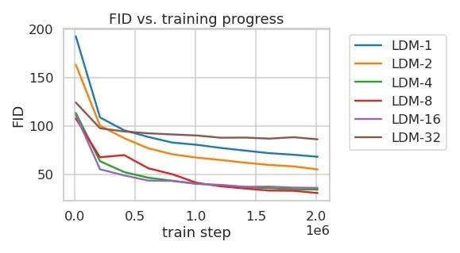
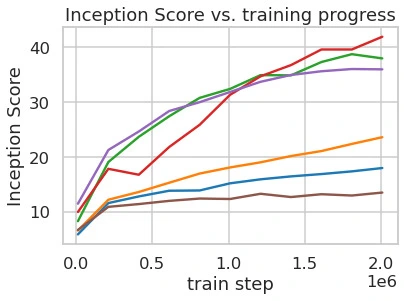
这一实验固定比较条件，使用 100 步 DDIM 采样；结论应理解为该实验中的权衡，不是任何模型采用同一压缩倍数都会达到同样的最优结果。潜空间的收益来自压缩与生成模型的共同设计，代价也包括编解码器训练、重建失真和对表示接口的依赖。
本篇接下来回答什么
图像基模可以先理解为一个完整的、可作为后续生成与编辑基础的模型系统。讨论它时，至少要分清四个问题：图像怎样表示，生成主干怎样处理这个表示，文字或参考图怎样进入模型，以及模型通过哪些训练任务获得生成和编辑能力。
接下来先讲 VAE 怎样学习图像表示，再讲 U-Net 与 Stable Diffusion 怎样组成潜空间生成系统；随后讨论 DiT、RAE 与 JiT 对主干或表示作出的不同选择，最后看 FLUX、Qwen-Image 与生成编辑基模如何组织整个系统。它们不是一条必须依次替换的继承链，而是在这些设计维度上作出了不同选择。
自编码器解决了什么
上一章希望把昂贵的生成过程搬到较小的表示空间。第一步是学会把图像编码进去，再把它解码出来。
普通自编码器（Autoencoder，AE）由编码器和解码器组成：
$\phi$ 是编码器参数，$\psi$ 是解码器参数。训练时，可以最小化像素重建误差：
假如编码后的张量比原图小，网络就需要学习怎样用较少的坐标保留重建信息。不过，重建做得好，并不意味着可以在潜空间随意抽一个点，再交给解码器生成自然图像。
原因是：这个目标只要求解码器处理训练图像编码出来的那些位置，没有规定潜空间其他区域应该是什么样，也没有告诉我们应该从哪个分布抽取新编码。
VAE（Variational Autoencoder，变分自编码器）把这一问题写成概率模型：假设图像由潜变量生成，同时学习怎样根据图像推断潜变量。 #Kingma-Welling-2014-VAE（§2–3）
从潜变量生成图像
首先指定一个容易采样的先验分布，例如
“先验”指看到具体图像之前，对潜变量的分布假设。随后用解码器定义给定潜变量时的图像分布：
解码器可以输出这个分布的参数。例如，若采用固定方差高斯似然，就让网络输出均值 $D_\psi(z)$：
这里 $\tau$ 是图像似然的标准差，不是扩散噪声日程。生成图像的概率来自所有可能潜变量的贡献：
训练希望提高真实图像的对数似然 $\log p_\psi(x)$。困难在于：解码器是非线性神经网络，这个积分通常无法直接算出。
如果已经看到图像 $x$，哪些潜变量可能生成它？答案由后验分布给出：
分母恰好包含那个难算的积分。VAE 因此引入编码器分布 $q_\phi(z\mid x)$，用一个容易计算、容易采样的分布近似真实后验。这里的 $q_\phi$ 是待学习的推断模型，与 DDPM 中人为指定的前向加噪过程不是同一个对象。
ELBO 怎样推出来
目标仍然是提高 $\log p_\psi(x)$。编码器分布提供了一种可计算的下界。假设相关分布的支持条件允许以下比值与期望，先在积分内乘除 $q_\phi(z\mid x)$：
因为对数是凹函数，Jensen 不等式给出“对数的期望不大于期望的对数”：
$\mathcal E(x)$ 称为证据下界（Evidence Lower Bound，ELBO）。“证据”在这里就是观测图像的边际似然。再用联合分布分解 $p_\psi(x,z)=p_\psi(x\mid z)p(z)$，得到
这里 $\mathbb E_q$ 都表示对 $q_\phi(z\mid x)$ 取期望；KL 散度定义为
它非负，衡量两个分布之间的差异，但并不是对称的距离。
下界为什么值得优化？原论文还给出一个精确恒等式：#Kingma-Welling-2014-VAE（§2.2）
右边第二项是近似后验与真实后验的差距。固定生成模型时，这个差距越小，下界越紧；联合训练时则同时优化编码器和生成模型。最大化 ELBO 提供了一个可优化的替代目标，并不意味着每一次提高下界都必然提高真实似然。
注意，这里出现了两种不同的 KL：恒等式中的 KL 对比真实后验，解释下界为什么成立；实际 ELBO 中的 KL 对比先验，才是训练时可直接计算的正则项。
重建与正则各自要求什么
最小化负 ELBO，得到标准 VAE 损失：
第一项要求编码携带足以恢复图像的信息。若使用前面固定方差的高斯似然，它就是
其中 $C$ 与编码器和解码器参数无关。因此，像素 MSE 可以从特定似然假设下推出来；它不是所有 VAE 必须采用的重建损失。原论文也讨论了适用于二值数据的 Bernoulli 似然。
第二项要求每张图像对应的编码分布不要任意偏离先验。它与重建存在张力：编码越能精确区分输入，重建往往越容易，但强行让所有编码分布都接近同一个先验，可能限制可携带的信息。
所以不能简单说“KL 越小越好”。如果编码器对所有输入都输出先验，而解码器也不再利用潜变量，就可能发生后验坍塌：正则项很好看，潜变量却失去了表达图像的作用。
实际工作经常写成
在重建项采用同一似然约定时，标准负 ELBO 对应 $\beta=1$。改变 $\beta$ 可以调节信息保留与正则的权衡，但一般不再是刚才那个生成模型的原始负 ELBO；还要留意求和、取平均和损失缩放的实现约定。
编码器为什么输出均值与方差
常用的近似后验是对角高斯：
编码器因此输出两组张量：均值与方差参数。工程实现通常输出对数方差 $\ell_\phi(x)=\log\sigma_\phi^2(x)$，再计算 $\sigma_\phi(x)=\exp(\ell_\phi(x)/2)$，保证标准差为正。
面对一张图像，编码器并不是先确定一个唯一编码，再无目的地破坏它，而是给出一组可能编码的分布。训练要求从这些编码采样后，解码器仍能合理重建输入。
对标准正态先验，KL 可以解析计算：
$j$ 遍历潜变量的所有标量坐标；在空间潜变量中，也包括不同空间位置与通道。可以直接看出，单独最小化这一项会鼓励 $\mu_j=0$、$\sigma_j=1$，而不是把方差压成零。#Kingma-Welling-2014-VAE（§3 与 Appendix B）
重参数化怎样让采样可训练
重建项需要从编码器分布中抽取 $z$。如果只把这个过程写成一个黑箱随机抽样，就看不清怎样把梯度传回决定分布的参数。
高斯分布可以等价地写成
$\odot$ 表示逐元素相乘。这就是重参数化：随机性来自与 $\phi$ 无关的标准正态噪声，网络参数通过一个可微表达式控制采样结果。
对固定采到的 $\epsilon$，有
因此，解码器重建损失的梯度可以沿 $D_\psi(z)\to z\to(\mu,\ell)$ 传回编码器。满足常见可微与可积条件时，可以用这种路径上的梯度估计期望的梯度。#Kingma-Welling-2014-VAE（§2.3–2.4）
flowchart TD X["训练图像 x"] --> E["编码器：均值 μ 与对数方差 ℓ"] E --> Z["z = μ + exp(ℓ/2) ⊙ ε"] N["ε：标准正态噪声"] --> Z Z --> D["解码器：图像分布参数"] D --> R["重建负对数似然"] X --> R E --> K["与标准正态先验的 KL"] R --> L["相加得到训练损失"] K --> L
这份噪声属于编码器的潜变量采样。它与扩散模型随后在潜空间施加、带有时间索引的噪声是两个不同环节，不应混为同一个加噪过程。
潜空间中的连续变化
VAE 原论文展示了二维潜空间：选取不同的二维编码，经同一个解码器得到不同的手写数字。#Kingma-Welling-2014-VAE（§4 与二维流形可视化图）
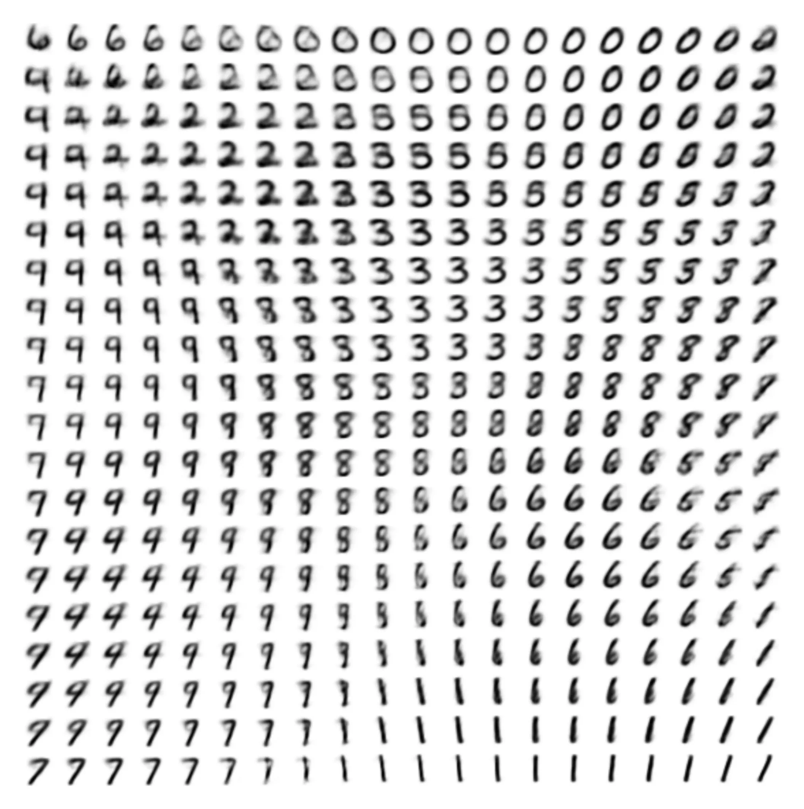
这有助于理解“用少量坐标控制高维图像”：移动潜变量，可以改变笔画、姿态或数字外观。但这张图不证明所有自然图像都能无损地压成二维，也不保证任意两点之间的直线插值都对应有效图像。
连续神经网络可以让输出随编码连续变化；输出是否始终自然、不同属性是否容易独立控制，还取决于数据、训练目标和模型本身。
VAE 与潜空间扩散分工不同
这里最容易产生一个疑问：既然 VAE 的先验已经是标准正态，直接采样再解码不就可以了吗？为什么还要训练扩散模型？
对标准生成式 VAE 来说，确实可以从 $p(z)$ 采样再解码。不过，现代图像压缩器通常更重视重建质量，采用较弱的 KL 正则；这时整批数据产生的编码分布
未必就是标准正态。这个 $q_\phi(z)$ 称为聚合后验，它把不同图像的编码分布汇总起来；不能因为每个分布受到 KL 约束，就断言它们的总体分布已经精确匹配先验。
LDM 将任务分成两阶段：#Rombach-2022-LDM（§3.1–3.2）
- 学习图像编解码器，得到便于重建与生成的表示空间。
- 固定这个编解码器，另行训练扩散模型，学习该空间中图像编码的分布。
第一阶段回答“怎样保存并恢复图像”，第二阶段回答“哪些编码应该以多大概率出现”。扩散模型使用的终端高斯噪声，再通过学到的路径变成这些编码，并不要求真实编码原本就是高斯。
LDM 原文采用感知损失、基于图像局部块的对抗目标，并比较弱 KL 正则与向量量化两种路线。感知损失比较特征表示，对抗目标鼓励局部视觉真实；这些选择是为重建质量服务的，不能把它们一律写成标准负 ELBO 的两个组成项。
因此，后面说 Stable Diffusion 的“VAE”时，需要分别记住三个对象：
| 对象 | 学什么 | 在生成中的作用 |
|---|---|---|
| 编码器 | 图像对应的潜变量分布 | 准备训练编码，或编码待编辑图像 |
| 解码器 | 潜变量怎样重建成图像 | 将最终潜变量变成可见图像 |
| 扩散主干 | 带噪潜变量上的预测与生成方向 | 在潜空间中反复求值并配合采样器生成编码 |
VAE 中的编码器和解码器也会使用卷积或残差模块，但它们不是那个反复去噪的生成主干。下一章介绍 U-Net，再把这些组件放回 Stable Diffusion 的完整系统中。
表示空间之外，还需要一个主干
VAE 解决了图像怎样编码和重建。扩散模型还需要一个网络：给它当前的带噪状态、时间与条件，让它预测下一步计算所需要的量。
把像素或潜空间中的状态统一记为 $y_t$，网络接口可写成
这里 $c$ 表示可选条件；输出形状示意采用固定方差、单一预测头的情形。一些模型还预测方差等额外信息，输出通道会相应增加。
在不同训练约定下，这个同形状张量可以表示噪声、干净状态或速度。主干决定怎样处理输入，预测参数化决定输出代表什么，采样器决定怎样使用输出更新状态。 U-Net 本身并不强制选择其中某种预测目标。
为什么叫 U-Net
U-Net 由 Ronneberger、Fischer 与 Brox 于 2015 年提出，最初用于生物医学图像分割。#Ronneberger-2015-UNet 分割需要为图像的不同位置给出类别：既要识别整体对象，又要精确定位边缘。
它的结构因此包含两条路径：左侧逐步降低空间分辨率、提取上下文，右侧逐步恢复分辨率、形成位置精确的输出。再用横向连接，把左侧相应尺度的特征送到右侧。画出来像字母 U，于是得名。
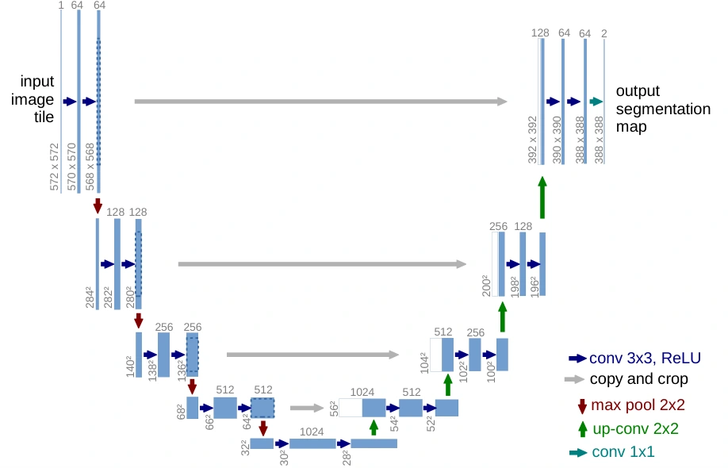
原图采用无填充卷积，所以特征在卷积后还会缩小，复制时需要裁剪对齐；例如输入与输出的空间大小并不相同。下面为了说明扩散网络常见的数据流，采用保持卷积空间尺寸的简化例子，不能拿这些尺寸逐项替换原图标注。
下采样怎样扩大视野
设一个输入特征为 $h_0$。收缩路径可抽象为
$B_\ell$ 是该尺度上的特征处理模块，$s_\ell$ 同时留给后面的跳跃连接；$\operatorname{Down}$ 可以是池化或带步长的卷积。
一层局部卷积只混合附近的特征。多层卷积叠加后，一个输出位置能依赖的输入范围逐渐增大；下采样让后续一个特征位置对应更大的原图区域，使低分辨率上的计算可以组合更大范围的信息。这一范围称为感受野。
在一个示意配置中，可以得到：
| 阶段 | 空间尺寸 | 通道数 | 主要变化 |
|---|---|---|---|
| 输入投影后 | $64\times64$ | $64$ | 从输入状态提取初始特征 |
| 一次下采样后 | $32\times32$ | $128$ | 空间变小，通道增加 |
| 二次下采样后 | $16\times16$ | $256$ | 组合更大范围的上下文 |
| 上采样并融合后 | $32\times32$ | $128$ | 融合相应尺度的信息 |
| 再次上采样后 | $64\times64$ | $64$ | 恢复输出所需的空间分辨率 |
这是教学示例，不是某个 Stable Diffusion 版本的精确配置。通道数增加，也不意味着下采样丢失的所有信息都被无损保存；这正是后面需要跳跃连接的原因之一。
上采样为什么需要跳跃连接
只把低分辨率特征放大，不能保证恢复输入中的边缘与细小结构。U-Net 在上采样时，把收缩路径保存的同尺度特征接回来：
$\bar u_\ell$ 来自更低分辨率，携带已经整合的上下文；$s_\ell$ 是收缩路径保留下来的特征，提供相应尺度的空间信息。二者在通道维拼接，再交给卷积模块学习怎样融合。
例如，两份特征分别为 $32\times32\times128$ 和 $32\times32\times128$，拼接后就是 $32\times32\times256$。后续模块可以把它重新映射为 $32\times32\times128$。拼接要求空间尺寸匹配，因此具体网络可能需要裁剪、填充或尺寸对齐。
这和残差连接要区分：跳跃连接通常把跨尺度路径的特征拼接起来；残差块通常计算 $h+F(h)$，是在形状匹配时相加。现代扩散 U-Net 经常同时使用这两种连接。
扩散网络怎样知道当前噪声强度
同一张模糊状态，在不同噪声强度下需要不同的预测。如果只输入图像状态，网络就没有明确的时间信息。
DDPM 使用一套跨时间共享的 U-Net 参数，并把时间 $t$ 编码后送进残差块；它采用正弦时间嵌入、Group Normalization，并在特定分辨率使用 self-attention。#Ho-2020-DDPM（§3 与 Appendix B）
一个常见的时间编码写法是
不同频率 $\omega_k$ 让模型能组合不同尺度上的时间变化；具体频率与时间缩放由实现决定。随后用 MLP 变换嵌入，并在每个残差块中投影到相应通道数。
以加法注入为例，一个残差块可以示意为
$*$ 是卷积，GN 是分组归一化，SiLU 是激活函数；$P_\ell$ 把时间嵌入投影到本层通道数，再在空间位置上广播。$S$ 在通道相同时可为恒等映射，不同时用投影对齐。这个式子用来解释信息流，省略了 dropout 等实现细节；其他版本也可以用时间控制特征的缩放与偏移。
因此，U-Net 不是每个时刻各训练一套网络，而是同一套网络根据时间嵌入改变处理方式。时间索引的变化也不等于沿网络深度逐层去噪：一次完整前向计算给出当前时刻的一次预测，采样器更新状态后，才再次调用网络。
Attention 与条件从哪里进入
卷积和多尺度结构已经可以扩大信息交互范围。Attention 则提供按内容选择交互对象的机制：把一张特征图展平成位置序列 $H\in\mathbb R^{N\times d}$，令
再计算
$d_k$ 是每个键与查询的维度，softmax 对每个查询的键位置归一化。Self-attention 允许一个图像位置按内容聚合其他位置的信息；因此，扩散 U-Net 不能简单等同于“只有局部卷积的模型”。
当条件是一串文本特征 $C$ 时，可以让图像提供查询、文本提供键和值：
这就是 cross-attention 的基本接口。LDM 用它把文字等条件引入生成主干；完整的条件编码、CFG 与控制模块在条件扩散篇展开。#Rombach-2022-LDM（§3.3）
flowchart TD X["当前带噪状态 y_t"] --> I["输入投影"] I --> E["收缩路径：多尺度特征"] E --> B["低分辨率处理"] B --> U["扩张路径：上采样与融合"] E -->|"同尺度特征的跳跃连接"| U T["时间 t 的嵌入"] --> E T --> B T --> U C["条件特征：可选 attention 接口"] --> E C --> B C --> U U --> O["输出投影：噪声、x 或速度预测"] O --> S["采样器：更新到下一时刻的状态"] S -->|"再次调用主干"| X
三种编码与解码，不要混淆
同一套生成系统里，“编码器”和“解码器”可能指不同事物：
| 所在组件 | 输入与输出 | 作用 |
|---|---|---|
| 图像 VAE | 图像与潜变量之间转换 | 学习图像表示与重建 |
| 扩散 U-Net 的收缩/扩张路径 | 当前状态的特征逐尺度变化 | 共同完成一次预测 |
| 文本编码器 | 文本到条件特征 | 为生成主干提供语义信息 |
U-Net 最低分辨率处的特征不是 VAE 保存的那份图像编码；上采样路径也不是把扩散最终潜变量变成 RGB 的图像解码器。它们属于同一次网络求值的内部过程。
本章可以归纳为：U-Net 用多尺度计算整合上下文，用跳跃连接保留空间信息；扩散版本再通过时间嵌入和 attention，把它变成一个能随噪声强度与条件变化的预测器。
它可以在像素空间运行，也可以在潜空间运行；可以预测噪声、干净状态或速度，也可以配合随机或确定性采样。下一章将把 VAE、文本编码器、U-Net 和采样器连起来，说明 Stable Diffusion 的完整训练与生成过程。
把组件连成一个系统
现在可以把前三章连起来了：先用图像编解码器建立表示空间，再让扩散 U-Net 在这个空间中学习图像分布；文字通过另一套编码器提供条件，采样器负责把模型预测变成状态更新。
这就是潜空间扩散模型（Latent Diffusion Model，LDM）的基本思路。Stable Diffusion 是这条路线中的具体模型系列。本章用 Stable Diffusion v1.4 说明组件关系；后续版本可能改变文本编码器、主干和训练目标，不能把这里的配置当成整个家族的共同定义。#Rombach-2022-LDM #CompVis-SD-v1-4（§3）
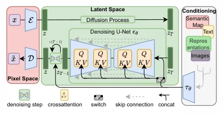
图中的过程分属两种尺度：U-Net 内部的多尺度处理，是一次预测的网络计算；外部从高噪声到低噪声的迭代，是采样器反复调用整个 U-Net。网络画成 U 形，不代表采样只调用一次。
第一阶段：准备图像表示
先独立训练图像编解码器。对采用 KL 正则的编码器，可以写成
这里暂用 $\zeta$ 表示编解码器自身的潜变量，把扩散模型实际处理的状态记为 $z$。SD v1.4 使用空间下采样倍数为 8、潜变量通道数为 4 的编解码器。对于一张 $512\times512$ 的 RGB 图像：
进入扩散模型前，还要按约定缩放潜变量：
SD v1 的公开配置使用 $s=0.18215$。这不是所有 VAE 或所有 Stable Diffusion 版本都通用的数学常数，而是该系统使用的尺度约定。#CompVis-SD-config 它让编码的数值尺度适合既定噪声日程；若省略缩放，或者解码前忘记除回去，扩散模型与解码器就会接收到不同于训练时的数值分布。
前一阶段学习的是“如何编码和重建”。训练扩散模型时，这套编解码器保持固定，避免生成模型学习的表示空间随训练任意漂移。标准生成训练不要求每次把预测解码为 RGB，再用像素损失监督 U-Net。
第二阶段：学习带文字条件的潜变量分布
训练数据是一对图像与文字 $(x,c)$。固定文本编码器给出序列特征
SD v1.4 使用冻结的 CLIP ViT-L/14 文本编码器，把未池化的文本序列输出送入 U-Net 的 cross-attention。#CompVis-SD-v1-4 这里的 ViT-L/14 是 CLIP 模型的命名，不表示扩散 U-Net 要用 CLIP 的图像分支处理带噪潜变量。
标准 SD v1.x 不在文本编码器与 U-Net 之间使用 unCLIP 式 prior：文本序列特征直接作为 cross-attention 的键和值。unCLIP 则先用 prior 根据文本生成 CLIP 图像表征，再让图像 decoder 以该表征等信息为条件生成图像；使用 CLIP 本身不意味着必须使用 prior。
LDM 原论文的文本实验则训练了另一套文本 Transformer，论文的通用条件目标允许联合优化条件编码器。“采用 LDM 方法”不等于“与原论文使用完全相同的文本编码器和训练策略”。 #Rombach-2022-LDM #CompVis-SD-v1-4（§3.3、文本生成实验）
随后随机抽一个训练时刻 $t$，并在潜空间加噪：
$\epsilon$ 和潜变量具有相同形状；它不是对解码后图像施加的像素噪声。非线性解码器也不保证“潜变量上的高斯加噪”等价于“RGB 图像上的高斯加噪”。
U-Net 根据状态、时间和文字预测这份已知噪声：
噪声预测损失写成
这个目标继承了前面 DDPM 的噪声预测思路，改变的是生成状态所在的表示空间，以及文字进入网络的接口。#Rombach-2022-LDM（§3.2–3.3）
每次训练只需随机选择一个时刻，构造对应带噪样本并计算损失；不必先从 $T$ 一路采样到 0，才更新一次参数。训练日程包含多少个离散时间索引，也不意味着推理时必须调用同样多次网络。
训练时哪些参数在更新
以标准 SD v1.4 基础训练为例，可以这样分工：
| 组件 | 扩散训练阶段 | 提供什么 |
|---|---|---|
| 图像编码器与解码器 | 固定 | 编码表示及最终图像重建 |
| CLIP 文本编码器 | 固定 | 文字的序列条件特征 |
| 扩散 U-Net | 更新 | 当前状态上的噪声预测 |
| 前向噪声日程 | 按约定预设 | 构造训练状态与标签 |
VAE 自己的重建、感知与 KL 等损失属于图像表示训练；U-Net 的噪声预测损失属于分布生成训练。它们不是把名字相加后，就自动成为所有阶段同时优化的同一个损失。
为支持 classifier-free guidance（CFG，无分类器引导），v1.4 的相应训练阶段还以一定概率丢弃文字条件；官方模型卡记录该阶段为 10%。这样同一网络既能处理正常文字，也能处理空条件。CFG 的数学解释留在条件扩散篇，本章只交代这两条预测为什么都能得到。#CompVis-SD-v1-4
生成时怎样从噪声走到图像
生成新图像时没有真实 $x$ 需要编码。首先编码提示词，再从近似标准正态的终端分布采样：
采样器选定一组由大到小的时刻。每个时刻先计算 U-Net 预测；如果使用 CFG，则组合条件与空条件预测：
这里 $w=1$ 对应普通条件预测，$w>1$ 增强引导。两项可以合并成一个批次计算，但仍包含两条条件分支，不能在估算计算量时把它们当成没有额外成本。
噪声预测可换算成干净潜变量估计：
接下来怎样更新，由采样器决定。例如对确定性 DDIM，从当前时刻 $t$ 走到较早时刻 $u<t$，有
这是用于说明系统如何调用模型的一种采样选择，不是所有 Stable Diffusion 采样器都必须执行的唯一公式。DDPM 式随机转移、DDIM 以及其他求解方法可以使用相同模型预测；更换采样器通常不需要重新训练图像编解码器。
反复更新到干净端后，只解码最终结果：
这里 $\hat z_0$ 表示最终获得的干净端潜变量。中途某一步算出的 $\hat z_0$ 只是当时的估计，并不一定已经足够准确；采样迭代会继续修正状态。
flowchart TD subgraph TRAIN["扩散训练"] X["真实图像"] --> E["固定图像编码器与潜变量缩放"] E --> Z0["干净潜变量"] Z0 --> ZT["随机时刻 t：添加已知噪声 ε"] C["配对文字"] --> T["固定文本编码器"] ZT --> U["训练 U-Net：预测 ε"] T --> U U --> L["与已知 ε 计算损失"] end subgraph SAMPLE["生成新图像"] P["提示词"] --> TC["文本编码与空条件"] N["随机初始潜变量"] --> LOOP["U-Net 预测与采样器更新"] TC --> LOOP LOOP -->|"尚未结束"| LOOP LOOP -->|"最终潜变量"| D["还原尺度与固定图像解码器"] D --> IMG["输出图像"] end
潜空间扩散改变了什么
| 设计问题 | 像素扩散 | SD v1.4 这样的潜空间扩散 |
|---|---|---|
| 生成状态 | RGB 像素张量 | 经过缩放的图像编码 |
| 加噪位置 | 像素空间 | 潜空间 |
| 网络监督 | 可选噪声、x、速度等 | 本例使用潜空间噪声预测 |
| 迭代结束后 | 直接得到像素状态 | 需要图像解码器 |
| 额外依赖 | 不必有预训练图像编解码器 | 依赖表示空间与解码质量 |
因此，LDM 的重要改变不是发明了另一种完全不同的噪声预测损失，而是把图像压缩与生成学习分开，让原有的扩散训练和采样框架在较小的表示空间中运行，再用条件接口组织可控生成。
收益是反复求值时可以处理较小的空间网格；边界则包括有损重建、潜变量尺度与编解码器依赖。VAE 也不会自动解决文字理解、主体一致性或复杂布局，这些能力取决于条件编码、数据、主干与训练设计。
本章的系统图还说明，表示空间与主干是可以分别讨论的：把 U-Net 换成 Transformer，并不必然意味着离开潜空间；继续使用 U-Net，也不意味着只能做像素扩散。下一章从这一点引出 DiT，讨论主干怎样从多尺度卷积网络变成图像 token 上的 Transformer。
保留潜空间，更换生成主干
Stable Diffusion 已经说明：图像表示、生成主干与采样器可以分别设计。接下来的问题是，既然扩散需要的只是一个根据状态与条件作预测的网络，主干一定要是 U-Net 吗？
Peebles 与 Xie 的 DiT（Diffusion Transformer，扩散 Transformer）用 Transformer 替换常见的 U-Net 主干，并研究增加模型规模与计算量怎样影响生成质量。#Peebles-Xie-2023-DiT
原始 DiT 仍然采用预训练 VAE，在潜空间中训练扩散模型。它改变的主要是带噪潜变量怎样被网络处理，没有因此取消 VAE，也没有把 DDPM 训练自动换成 Flow Matching。原论文重点研究 ImageNet 类别条件生成，而不是一套直接接收自由文本的完整文生图系统。
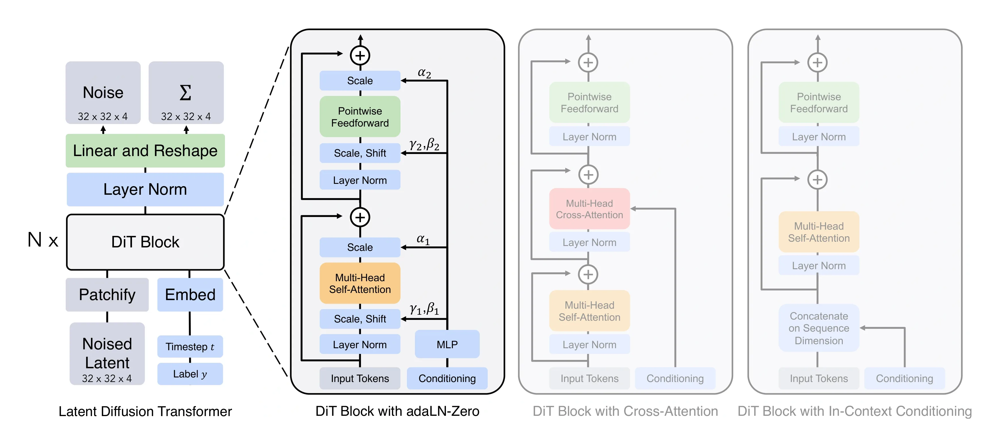
图像怎样变成 token
设带噪潜变量为
把它切成互不重叠的 $p\times p$ 小块，假设 $h,w$ 都能被 $p$ 整除，则块的数量为
每个块展开后有 $p^2c_z$ 个标量，再通过线性投影得到一个 $d$ 维 token：
$P_i$ 表示取第 $i$ 个图像块。所有 token 组成 $U\in\mathbb R^{N\times d}$。这里的 token 是连续特征向量，没有经过离散词表量化；“图像 token”并不必然意味着 VQ 码本或像文字那样的整数 token ID。
还要加入位置编码：
原始 DiT 使用正弦余弦位置编码。它让模型知道一个块位于哪里，因为 self-attention 的内容交互本身不自带二维空间顺序。
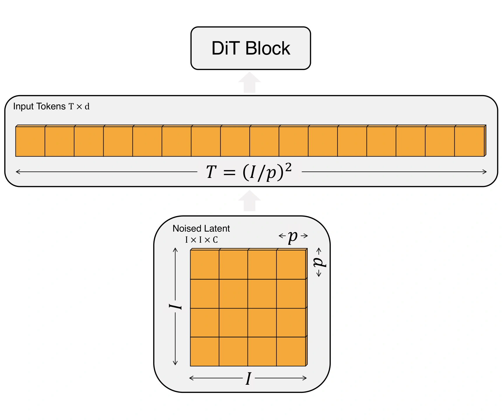
例如，一张 $256\times256$ 图像经八倍下采样得到 $32\times32\times4$ 潜变量：
| latent patch 边长 $p$ | 每块标量数 $p^2c_z$ | token 数 $N$ |
|---|---|---|
| 8 | 256 | 16 |
| 4 | 64 | 64 |
| 2 | 16 | 256 |
DiT-XL/2 中的 XL 表示主干规模，/2 表示潜空间 patch 边长为 2。它不是把原始 RGB 图像直接切成 $2\times2$ 块，也不是只生成两个 token。
Transformer 怎样处理这些块
每层 Transformer 先通过 self-attention 在 token 之间交换信息，再通过逐 token 的 MLP 变换特征。对归一化后的序列 $\bar H$，单个注意力头计算
完整模块包含多个注意力头及输出投影。一个 patch 可以按当前内容聚合其他 patch 的信息，因此即使没有 U-Net 式逐级下采样，也能直接进行远距离交互。
原始 DiT 在主干内部保持 token 数与隐藏维度，不依靠 U 形的多尺度收缩和恢复。这里的“没有 U 形结构”不等于“没有残差连接”：Transformer blocks 同样使用残差更新来保留与修改特征。
条件怎样进入：adaLN
网络不仅要看带噪状态，还要知道时间 $t$ 与类别 $y$。原始 DiT 将二者嵌入后相加，形成条件向量
原论文比较四种注入方式：把条件作为额外 token 加入序列、通过 cross-attention 读取条件、使用自适应层归一化，以及其零初始化变体。#Peebles-Xie-2023-DiT（§3.2）
自适应层归一化（Adaptive Layer Normalization，adaLN）的做法是，让条件决定归一化后特征的缩放与偏移：
$\operatorname{LN}$ 在每个 token 的特征维上归一化；$\gamma(c),\beta(c)\in\mathbb R^d$ 由条件网络预测，并在所有位置共享。这里采用 $1+\gamma$ 的写法，使 $\gamma=0$ 对应不额外改变缩放。
“所有 token 共享调制参数”并不意味着输出相同，因为不同位置的输入特征与注意力结果不同。这种机制让时间与类别影响整个处理过程；它也不是直接把一段文字的所有细节压成类别向量，就能获得同等的文本控制能力。
adaLN-Zero 的零在哪里
adaLN-Zero 还让条件预测每条残差分支的通道门控。一个 block 可写成
MSA 表示多头 self-attention；$g_a,g_m$ 是门控，均在 token 位置上广播。初始化时把门控输出设为零，block 就从恒等映射开始：
这使残差网络在训练开始时保留输入，再逐渐学习应该增加怎样的修改。零初始化的是特定条件调制输出，不是把整个 Transformer 的所有权重都设成零。
门控为零也不意味着模型永远学不了：以 $H+g\odot F(H)$ 为例，对 $g$ 的梯度取决于 $F(H)$，并不因 $g=0$ 而必然为零。具体梯度何时传到更深的分支，还取决于其他零初始化层与更新顺序。
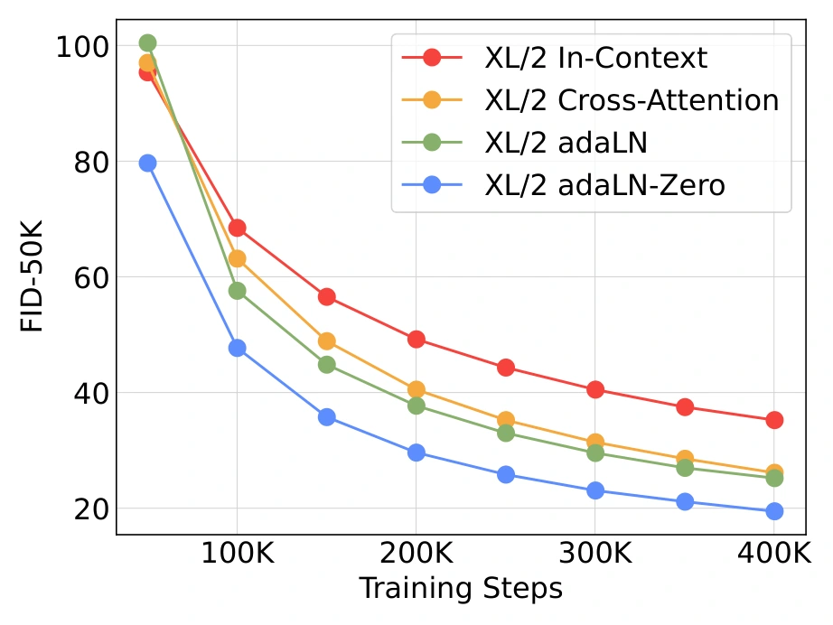
怎样从 token 恢复预测张量
最后一层把每个 token 投影回一个空间块，再按原有位置重排：
$\tilde H_i$ 表示最终归一化后的特征，$W_{\mathrm{out}}\in\mathbb R^{d\times p^2c_{\mathrm{out}}}$。上式按列向量约定写输出投影。
原论文还学习反向过程的对角协方差参数，因此输出包含噪声预测和协方差参数两部分，$c_{\mathrm{out}}=2c_z$。协方差部分需要相应的变分目标监督；不能把整份输出都和噪声标签直接做同一个 MSE。#Peebles-Xie-2023-DiT（§3.1–3.2）
这一步的“解码”只是 token 到预测张量的线性投影与重排，不是 VAE 把最终潜变量还原成 RGB。DiT 一次前向仍只提供采样器要用的预测；最终图像还需要经过采样迭代与 VAE 解码。
规模为什么重要
改变 patch 大小，不会大幅改变主干的大部分参数数量，但会改变每次处理多少 token。对隐藏宽度 $d$ 固定的普通 Transformer，单层主要计算项可以概括为
前者来自投影与 MLP 等，后者来自全注意力交互。patch 边长减半，$N$ 变为四倍：前一项约变四倍，后一项约变十六倍。实际运行还取决于实现与硬件，不能把其中一项的倍率直接当成总耗时倍率。
DiT 原文同时改变网络深度、宽度和 patch 大小。在其 ImageNet 实验中，增加主干计算量通常对应更低的 FID；较小 patch 提供了更多 token，也增加了每次预测的计算。#Peebles-Xie-2023-DiT（§4）
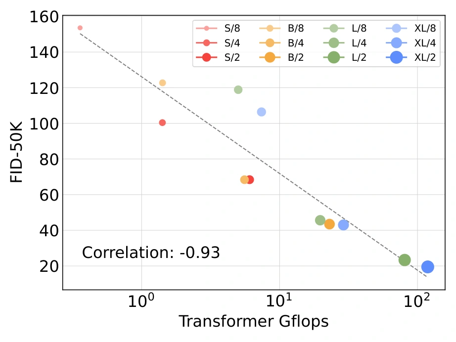
因此，DiT 的贡献不只是“把卷积换成 attention”，还在于系统研究条件模块、patch 大小与主干规模，展示标准 Transformer 路线在扩散生成中的可扩展性。它没有证明 Transformer 在所有数据规模、延迟预算和任务上都优于 U-Net。
U-Net 与 DiT 怎样比较
| 维度 | 典型扩散 U-Net | 原始 DiT |
|---|---|---|
| 空间组织 | 下采样、上采样及同尺度跳跃连接 | 固定长度 patch token 序列 |
| 信息交互 | 卷积、多尺度，也可以含 attention | self-attention 与逐 token MLP |
| 位置结构 | 卷积与空间网格提供结构 | 显式位置编码与 patch 网格 |
| 条件接口 | 时间嵌入、归一化调制、cross-attention 等 | 论文比较四种方式，选择 adaLN-Zero |
| 表示空间 | 可以是像素或 latent | 原文实验使用 VAE latent |
| 预测与采样 | 由训练目标和采样器决定 | 同样由训练目标和采样器决定 |
这是一组典型设计的比较，不是架构名称施加的全部限制。Transformer 可以做成多尺度，U-Net 也可以使用全局 attention；DiT 不天然等于速度预测、Flow Matching 或 ODE。
本章建立了原始 DiT 的主干接口。下一章将分别讨论 SiT、REPA 与 DDT 如何改进生成过程、训练监督和主干分工。
本章沿着三个问题展开：主干保持不变时，怎样选择生成路径与采样方式？中间层怎样更高效地学到语义？语义提取与速度预测又能否拆开计算？它们分别对应 SiT、REPA 与 DDT，不构成每一项都必须替代前一项的模型继承链。
SiT：主干不变，重新设计生成过程
DiT 证明了 Transformer 可以充当扩散主干，接着就要问：生成效果来自网络结构，还是来自与它搭配的路径、训练目标和采样器？
SiT 的全称是 Scalable Interpolant Transformer，可扩展插值 Transformer。它沿用 DiT 的主干结构，在相同参数量和单次前向计算量下，系统比较四个设计维度：离散或连续时间、预测什么、数据与噪声怎样插值、确定性或随机采样。#Ma-2024-SiT
为与后面 RAE 的公式一致，这里用 $\tau=0$ 表示数据端，$\tau=1$ 表示噪声端。设干净潜变量为 $z_0$，一般插值写成
其中 $a(0)=b(1)=1$、$a(1)=b(0)=0$。对不同的 $a,b$，就能得到不同的中间边际分布。
每一对数据与噪声给出配对路径导数
以平方损失回归它，学习到的则是当前状态上的条件平均速度：
它决定把整批样本分布搬运过去的 ODE：
例如线性插值取 $a=1-\tau,b=\tau$，监督信号就是 $\epsilon-z_0$。这与前文 Flow Matching 的公式直接相接；SiT 的意义不是宣称首次提出速度预测，而是把这些路径与求解设计放到 DiT 主干上，进行控制变量比较。
连续时间也不等于采样时无须离散。训练可以从连续时间分布抽样，实际求解 ODE 仍要选择有限个时间点和数值方法。
更进一步，速度场不把采样器绑定为 ODE。在满足相应正则条件且使用精确场时，同样的边际分布还可以由反向 SDE 实现：
其中 $s^*=\nabla_z\log p_\tau(z)$，$\bar W$ 是反向时间布朗运动；这里沿 $\tau:1\to0$ 积分。设置 $w=0$ 就回到 ODE，$w>0$ 则引入随机扰动，同时修改漂移，不能只给 ODE 随意加噪而不补偿方向。
SiT 研究如何在训练之外选择随机采样的扩散系数；实际网络有误差，数值求解也有限步，因此不同设置会出现不同的生成效果，不能把理论边际一致误解为有限步样本质量必然相同。#Ma-2024-SiT（§2–3）
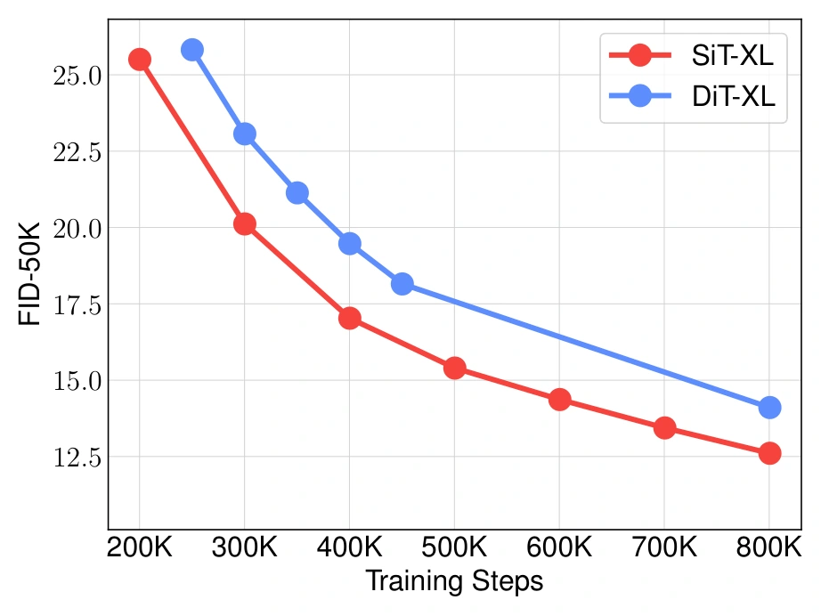
REPA：给中间特征一个语义老师
改变路径后，主干仍然需要从带噪状态中学出可用的表示。只靠最终噪声或速度损失，是否能高效学会图像的语义结构？
REPA（Representation Alignment，表征对齐）指出，扩散主干虽然能学出有用特征，但其语义可读性和与强视觉表征的对齐程度仍有差距。它增加一个训练信号，让主干的中间特征向冻结视觉编码器提供的干净图像特征学习。#Yu-2024-REPA
设干净 RGB 图像为 $x$，用于扩散的潜变量仍由原有 VAE 得到。另用冻结表征模型产生教师特征：
扩散主干根据带噪潜变量得到中间特征 $h_\theta(z_\tau,\tau)$，再用可训练投影头 $P_\phi$ 对齐特征维度。以逐 patch 余弦相似度为例：
这里假设特征网格已按方法约定对齐，范数采用数值稳定处理。总损失是
生成损失继续要求网络完成去噪或速度预测，对齐损失则给中间层提供语义引导。REPA 不要求把所有层都变成教师特征：后面的网络仍需完成具体生成预测，原文也研究了对齐层位置的影响。
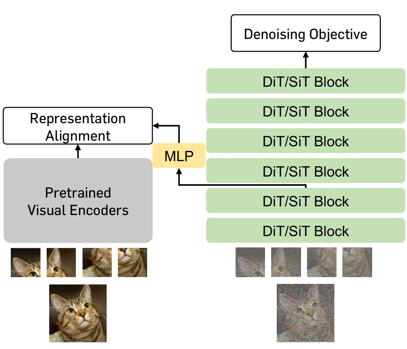
需要和下一章的 RAE 区分：REPA 用教师特征监督主干，RAE 则直接用表征编码作为生成状态。 REPA 本身不要求更换 VAE；标准生成推理也不需要拿出一张真实目标图像，再运行教师网络。
DDT：把语义编码与速度解码分开
DDT（Decoupled Diffusion Transformer，解耦扩散 Transformer）进一步追问：既然中间层需要形成语义表示，而最后又要完成细粒度速度预测，是否应当给这两项任务明确分工？#Wang-2025-DDT
作者通过频谱变化与时间步分配实验，提出一个分析视角：生成早期要从高噪声状态建立整体结构，后期逐渐完善细节；提取稳定语义与表达细粒度变化，放在同一条处理链中可能存在优化张力。在其研究配置中，增加高噪声阶段的采样计算更有帮助，支持作者对语义编码瓶颈的判断。
这里低频与语义、高频与细节是理解模型行为的近似视角，不是严格的一一对应。论文的实验也不能单独证明所有扩散模型都受同一种瓶颈限制。
DDT 把主干显式拆成两部分：
$y$ 是类别条件。Condition encoder 读取当前状态、时间与类别，提取 self-condition（内部自条件）$h_\tau$；velocity decoder 再根据它预测速度。
关键是 decoder 同时直接读取当前带噪状态 $z_\tau$。 它可以利用其中的细粒度信息，不必要求 encoder 输出独自承担所有信息的传递。这里的 condition encoder 不是 CLIP 文本编码器，velocity decoder 也不是 VAE 的 RGB 解码器；它们属于扩散主干内部。
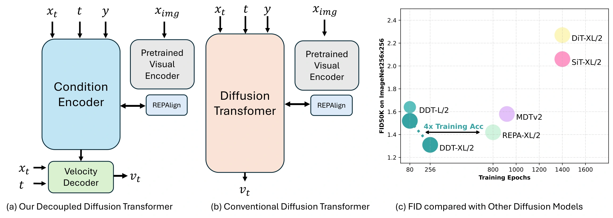
DDT 怎样训练与复用特征
DDT 借用 REPA 的表征对齐监督 encoder，并通过 decoder 的速度损失联合训练。沿本节数据到噪声的时间约定，线性路径上的目标为
编码器既接收表征对齐的直接监督，也接收从速度损失传回的梯度。这里速度符号与 DDT 原论文相反，因为原论文采用噪声到数据的时间方向；两者通过 $t=1-\tau$ 转换，描述同一类线性路径。
显式的内部条件还带来一个推理机会：相邻时间步的 $h$ 往往较相似，未必需要每一步都重新提取。
设采样序列为 $\tau_0>\tau_1>\cdots>\tau_N$，选择一个包含初始步骤的刷新集合 $\mathcal R$。计算时可以使用
即使复用语义特征，decoder 仍然读取当前状态和时间；它不是把上一步的速度预测原样复制过来。
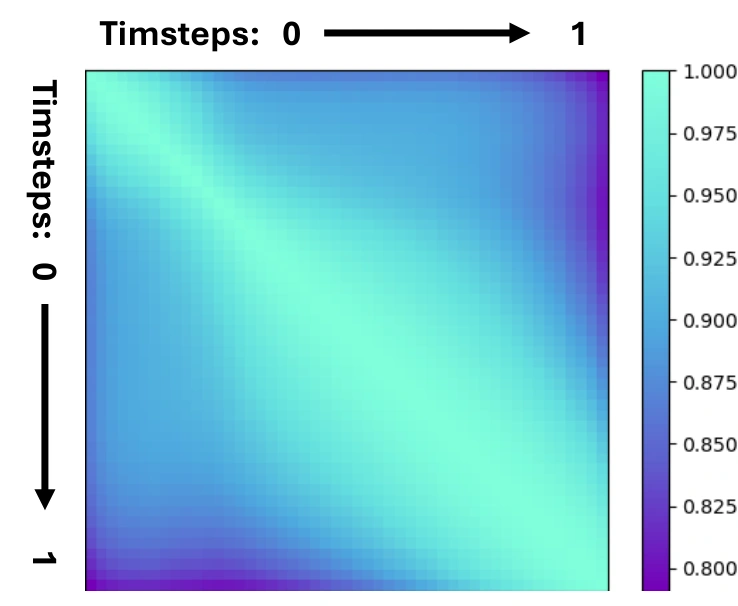
原文根据统计特征相似度构造代价，用动态规划在给定 encoder 调用预算下选择刷新位置。这个“最优”针对所定义的相似度代价，不是直接保证最终 FID 全局最优。
因此，DDT 的加速方式与 DDIM 的少步采样不同：DDIM 改变状态更新与时间子序列，DDT 可以保留既定采样步数、减少其中昂贵的 encoder 重算。两种方向可以组合；过度复用仍可能让条件陈旧并降低质量，实际节省也取决于 encoder 与 decoder 的成本占比。
这些方法分别改了哪一层
| 方法 | 主要问题 | 主要改动 | 没有因此自动改变的部分 |
|---|---|---|---|
| DiT | Transformer 能否承担图像扩散主干 | patch token、条件 block 与规模设计 | 不决定必须使用哪种路径与采样器 |
| SiT | 同一主干怎样搭配生成过程 | 插值、时间、预测目标与 ODE/SDE 采样 | 可沿用 DiT 主干与 VAE |
| REPA | 中间语义表示学得是否高效 | 用冻结视觉表征增加对齐监督 | 不必更换生成状态或推理接口 |
| DDT | 语义提取与速度预测怎样分工 | 拆分 encoder/decoder，并局部复用内部条件 | 不替代 VAE，也不等于跨步采样 |
这些工作可以相互借鉴，不应理解成每个名字都指向一种全新的“扩散公式”。SiT 主要改变生成过程的配置，REPA 改变训练监督，DDT 改变主干分工及推理复用方式。
这也为下一章提供了连接：RAE 直接更换生成状态的表示，并借鉴 DDT 的分工引入浅而宽的去噪头。RAE 的 $\mathrm{DiT}^{\mathrm{DH}}$ 与 DDT 原论文不是同一个模型配置；前者强调高维表征与宽度瓶颈，后者强调语义编码、速度解码和跨步骤复用。
本章讲的是怎样处理生成状态。下一章回到生成状态应该是什么：RAE 在表示接口上重新设计编码与解码，JiT 则重新研究直接像素生成。这些选择可以与 Transformer 主干组合，但不意味着它们是原始 DiT 必然经历的升级步骤。
图像表示还可以怎样选
前面得到一套有效组合：VAE 压缩图像，DiT 在潜空间中生成。但这不是唯一选择。压缩会限制可恢复信息，而为重建训练的表示，也未必最方便生成模型学习语义结构。
本章讨论两种不同回答：
- RAE（Representation Autoencoder，表征自编码器）：保留编码、生成与解码的分工，改用预训练表征编码器提供图像表示。
- JiT（Just image Transformers）：直接处理像素，通过重新选择网络预测的对象，减少对预训练图像编解码器的依赖。
二者都重新思考“生成应该在哪种表示中运行”，但不是 VAE → RAE → JiT 的单线升级，也不能把 JiT 说成换了一种 VAE。#Zheng-2025-RAE #Li-He-2025-JiT
RAE：让表征模型提供潜变量
表征模型通常通过识别或自监督任务学习图像特征。RAE 的问题是：这些特征不仅能用于理解图像，能不能也成为生成模型的状态？
其基本结构为
$E_{\mathrm{rep}}$ 是冻结的预训练表征编码器，$D_\psi$ 是另行训练的图像解码器。原论文研究 DINOv2、SigLIP 2 与 MAE 等编码器，用像素 L1、感知和对抗损失训练解码器重建图像。#Zheng-2025-RAE（§2）
这里没有要求编码器输出高斯后验，也没有用标准 VAE 的 KL 项强行把每张图像的编码拉向标准正态。它使用的是确定性的表征特征，因此“自编码器”描述编码与重建的结构，并不意味着所有自编码器都是变分模型。
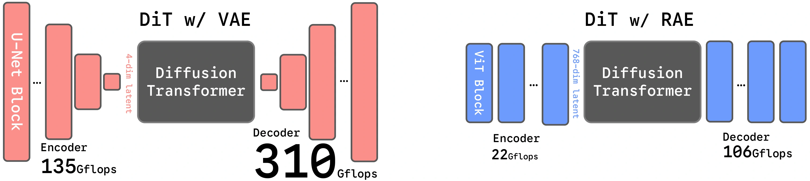
“表征偏重语义”也不等于“特征中已经没有细节”。原论文的重建实验说明，在其配置下，训练合适的解码器仍能从冻结特征恢复丰富的视觉信息。它同时区分重建 FID（rFID）与生成 FID（gFID）：前者评估真实图像编码再解码，后者评估生成模型产生的图像，不能混用。
潜空间不一定更低维
RAE 的重要变化是，不再把强压缩当成唯一目标。设编码器产生 $N$ 个 token，每个 token 维度为 $d_z$，总表示维度为
以论文讨论的 256 个、每个 768 维的表征 token 为例，总共有
个标量，与 $256\times256\times3$ RGB 图像的标量数量相同。作为对照，SD-VAE 在该分辨率下的 $32\times32\times4$ 编码只有 4,096 个标量。
所以，“latent”表示一种内部表示，并不保证总维度低于像素。RAE 可以把图像变成更有语义结构的特征，同时保留较大的表示维度；这与 LDM 首先强调压缩的动机有所不同。
生成主干的成本还取决于 token 数和隐藏宽度。RAE 可以使用 256 个高维 token，VAE-DiT 也可以把低通道潜变量切成 256 个 token；序列长度相同，有助于控制注意力计算规模。但输入输出投影、高维预测以及必要的宽度调整仍有成本，不能据此断言换上 RAE 完全没有额外开销。
表征好，为什么还不一定好生成
第二阶段需要学习这些表征的分布。为避免两篇论文时间方向相反造成混乱，本节统一用 $\tau=0$ 表示数据端、$\tau=1$ 表示噪声端：
这与 RAE 原文的时间方向一致，对应配对路径速度
网络通过 Flow Matching 回归速度：
对没有把来源样本作为输入的网络，最优回归函数是给定当前状态的条件平均速度场，而不是记住每一对样本的私人路径。生成时从噪声端沿减小 $\tau$ 的方向求解。
把标准 DiT 直接搬过来，并不一定成功。RAE 原文在同一实验设置中发现，较好的重建不自动带来较好的生成：标准主干在高维表征上的表现反而可能落后于 VAE 表示。#Zheng-2025-RAE（§3）
原因之一是预测通道的瓶颈。考虑输入 token 维度为 $n$，隐藏宽度为 $d<n$，且模型受限于
输出始终落在 $B$ 张成的至多 $d$ 维线性子空间中。若监督的是含有满维高斯噪声的速度，就会存在无法通过输出子空间表达的分量。
以单张固定干净样本为例，速度目标 $\epsilon-z$ 的协方差是 $I_n$。不计均值残差，仅被输出子空间遗漏的方差就至少有 $n-d$，因此该受限模型的逐维平均平方误差存在下界
这个例子解释了论文为何关注宽度：需要表达满维噪声分量时，仅把窄主干加深，不一定能绕过线性输出瓶颈。 它不是“所有预测目标都要求隐藏宽度大于输入维度”的普遍定理，也不是 token 数必须大于网络深度；适用范围取决于目标、投影结构以及有没有绕过瓶颈的信息通道。#Zheng-2025-RAE（§3.1）
RAE 怎样适配高维表征
原论文采取了几项相互配合的设计。
第一，采用浅而宽的去噪头。 不必把整个深主干都加宽，而是让主干提取条件特征，再让宽头同时读取当前带噪输入与主干特征：
宽头保留直接接触高维带噪状态的通路，避免所有信息都必须挤过较窄的深主干。论文将这一组合记为 $\mathrm{DiT}^{\mathrm{DH}}$；浅头控制的是加宽的成本，并不是宽头完全不增加计算。#Zheng-2025-RAE（§4）
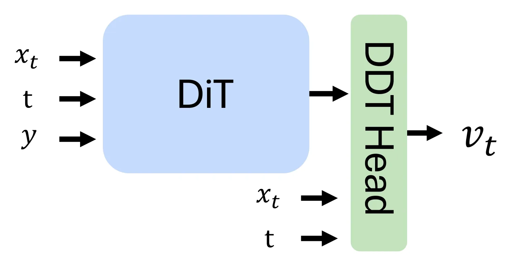
第二，调整时间采样日程。 高维表征的通道数与有效维度不同于低通道图像或 VAE 编码，照搬原有噪声配置可能不合适。原文使用维度相关的时间变换：
其中 $m$ 是目标表示的有效维度，$n$ 是参考维度，论文采用 $n=4096$。对 $m>n$，同一个内部时间样本会移向更大的噪声时间，改变训练对各噪声强度的覆盖。它调整的是训练时间或日程的安排，不是宣称换坐标以后数据已经自动变得好生成。#Zheng-2025-RAE（§3.2）
第三，让解码器容忍生成误差。 干净编码与模型生成的编码之间会有偏差；只在精确训练编码上学重建，可能让解码器对偏差敏感。RAE 在解码器训练时给特征添加小扰动：
并让它仍然重建原图。原文还随机采样扰动强度 $\sigma$。这是解码器的鲁棒性训练，与生成模型沿整条时间路径学习速度是两个环节。
相应消融中，噪声增强让 gFID 从 4.81 降至 4.28，却让 rFID 从 0.49 变为 0.57，说明更稳健的生成解码与最精确的干净重建可能存在权衡。不能只凭较低的重建误差选择整个生成系统。#Zheng-2025-RAE（§3.3）
JiT：直接在像素上预测干净图像
JiT 选择另一条路线：不使用预训练图像编解码器，把原始 RGB 图像切成较大 patch，交给 Transformer，直接输出干净图像预测。#Li-He-2025-JiT
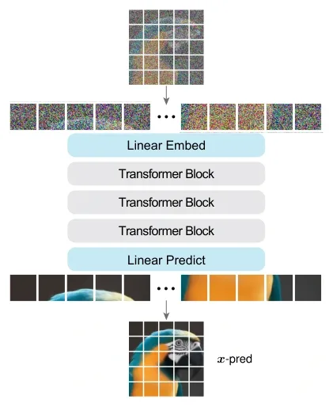
对于 $256\times256$ 图像，$16\times16$ patch 只有 256 个，但每个输入块有 $16\times16\times3=768$ 个标量。对 $512\times512$ 图像，采用 $32\times32$ patch 仍可保持 256 个 token，但每块维度达到 3,072。
所以，不使用 VAE 并不等于必须对每个像素建立一个独立 token。大 patch 可以控制序列长度，难点则转向网络是否能处理每块的高维带噪信息。
JiT 的关键选择是网络直接输出
按照流形假设，干净图像具有结构化、较低内在维度的信息；输出干净图像允许模型丢弃不必复现的噪声分量。这里的“较低维”指目标结构，不是输出张量的形状缩小，也不保证每个预测都严格落在真实图像流形上。
预测图像，也能训练和求解速度
原论文使用的时间方向与本节相反；令其时间 $t=1-\tau$，就能统一比较。由当前状态与干净图像预测，可直接换算速度：
真实配对速度是 $v_\tau=\epsilon-x_0$，利用 $x_\tau=(1-\tau)x_0+\tau\epsilon$，有
所以速度空间的平方损失等价于加权的图像重建误差：
公式用于内部时间区间；靠近 $\tau=0$ 的数值处理必须遵循实际时间采样、截断与实现约定，不能直接在端点除以零。
这说明，网络直接预测什么，与损失在哪个空间计算，是两个问题。 JiT 可以直接输出干净图像，再通过含有当前状态的显式公式构造速度，交给 ODE 采样器。它没有因此放弃可学习的向量场或生成路径。
这也解释了它为什么不直接违反前面的宽度瓶颈分析：转换后的速度包含当前 $x_\tau$ 的直接通路，并不再受限于单纯的 $Bf(Ax_\tau,\tau)$ 输出形式。它没有要求干净图像预测分支自己保存并重新输出所有噪声。
瓶颈实验说明什么
JiT 在大 patch 情形比较预测目标，并研究把 768 维输入块先降到更低的中间维度，再映射到 Transformer 隐藏空间。原论文发现，直接图像预测在较强瓶颈下仍能工作，部分瓶颈设置甚至有益。#Li-He-2025-JiT（方法与瓶颈实验）
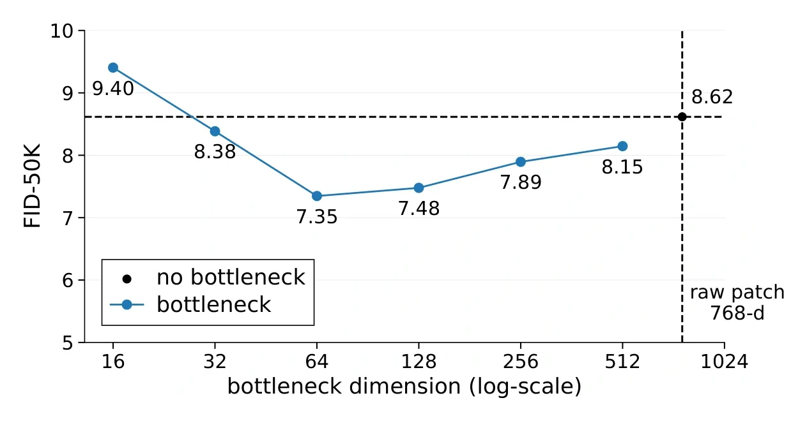
这个实验支持“预测干净结构可以减少噪声信息保留负担”的解释，但它不是精确测量了自然图像流形维数，也不证明所有速度预测都会失败。若速度网络具有足够宽度或另设噪声信息通路，同样可以有效生成；前面的 x-prediction 篇已进一步讨论这些区别。
两条路线怎样放在同一框架里
| 维度 | VAE 潜空间路线 | RAE 原文路线 | JiT 原文路线 |
|---|---|---|---|
| 状态空间 | 压缩图像编码 | 冻结编码器的高维表征 | 原始像素 |
| 图像编码器 | 学习重建并施加正则 | 预训练表征编码器，冻结 | 不需要 |
| 图像解码器 | 需要 | 需要，另行训练并增强鲁棒性 | 不需要 |
| 主要考虑 | 压缩与重建的权衡 | 表征质量与高维生成适配 | 大 patch 下的预测负担 |
| 本章对应预测 | SD v1.4 为噪声 | 速度，配合宽头等设计 | 干净图像，可换算速度 |
| 主要依赖 | 预训练图像表示接口 | 预训练表征与解码器 | 更直接的像素训练设计 |
RAE 提醒我们，好的生成表示不一定等于最强压缩；JiT 提醒我们，不靠图像压缩器，也可以通过改变预测方式处理高维图像。两者没有取消采样次数、主干计算、数据质量或训练成本的问题，也不能只凭采用哪种表示就预判所有任务的画质与速度。
后面讨论 FLUX、Qwen-Image 等完整基模时，仍要分别核对它们实际使用的图像表示、主干与任务设计，不能因为这里介绍了 RAE 和 JiT，就假设那些模型已经采用了这两条路线。
从一个主干到完整基模
DiT、SiT、REPA 和 DDT 分别讨论主干、路径、训练监督与计算分工。完整的图像基模还需要把这些设计与图像表示、文本理解、数据和训练流程结合起来。
本章先介绍 Stable Diffusion 3（SD3）的 Rectified Flow 与 MMDiT，再用 FLUX.1-dev 的公开架构和初代《Qwen-Image Technical Report》比较系统接口，随后讨论 Qwen-Image-2.1、Z-Image、HunyuanImage 3.0，以及 Seedream 5.0 Pro、FLUX.2。前两者采用潜空间中的 Transformer 生成，但并不是使用 RAE 或 JiT 的实例；后续模型也要分别核对，不能把家族的所有版本混写成同一配置。#BFL-FLUX1-code #Qwen-2025-Image #Qwen-Image-2-1 #Z-Image-report #HunyuanImage3-report #Seedream5-official #FLUX2-official
比较时始终问四个问题：生成状态是什么，条件怎样表示，模态怎样交互，网络预测怎样用于采样。这样才不会把“换了一个更大的模型”当作机制解释。
Stable Diffusion 3
Rectified Flow 与 MMDiT
Stable Diffusion 3（SD3）对应 Esser 等的《Scaling Rectified Flow Transformers for High-Resolution Image Synthesis》。它结合潜空间生成、Rectified Flow 与多模态 DiT；文字与图像使用各自的参数，通过联合注意力交换信息。它不是 FLUX.1 的论文，后者的双流后接单流结构需要独立核对。#Esser-2024-SD3
原始架构图与机制说明
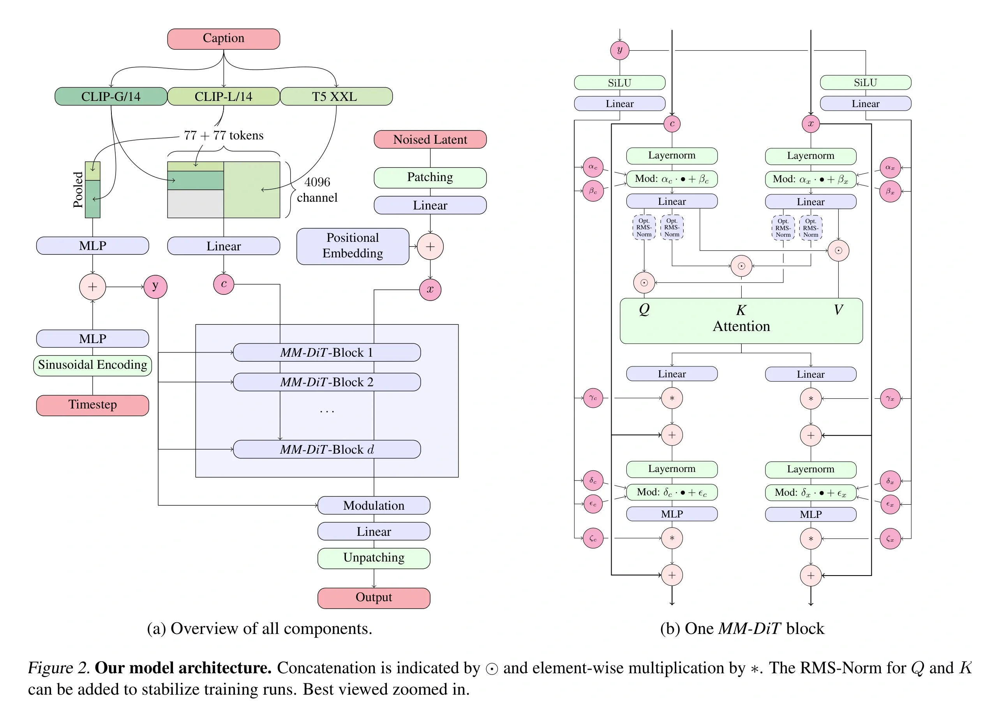
先看左图：图像经自编码器进入潜空间，带噪潜变量被切成图像 token；文本编码器提供序列表示和汇聚表示。序列表示参与图文交互，汇聚表示与时间嵌入用于模块调制。图像输出再还原为潜变量的预测，交给采样更新。
再看右图：文字与图像各自生成查询、键和值，随后把两种模态的键和值放进同一次注意力计算。这样，图像 token 可以读取文字信息，文字 token 也可以读取图像信息；注意力结果再按模态分开，经过各自的投影与前馈模块。因此，独立参数不等于独立计算，联合注意力也不等于所有参数共享。
这正是与后面 FLUX.1 的比较起点：SD3 的 MM-DiT 在模块内保留模态专属参数；FLUX.1-dev 则先使用双流模块，再进入单流模块。这里的原图解释 SD3，不作为 FLUX.1 的结构图。
FLUX.1
图像表示与文本条件
FLUX.1-dev 的公开实现使用图像编解码器、文本编码器，以及包含双流和单流模块的生成 Transformer。图像编解码器提供 16 通道潜变量，带噪潜变量再按 $2\times2$ 的空间块打包：
每个 token 在输入投影前有 $2\times2\times16=64$ 个数。图像编解码器的空间下采样，与这一步打包是不同环节；不能把两者都叫一次 VAE 压缩。
文字则有两条输入通路：
T5 提供文本序列特征，作为与图像交互的一串 token；CLIP 提供池化后的全局文本向量，与时间嵌入等一起控制网络调制。官方配置中二者输入维度分别为 4096 和 768。#BFL-FLUX1-code（文本准备与主干实现）
所以，这不是把两个向量简单求平均，也不是先用 prior 把文本生成成 CLIP 图像向量。它是在一个生成网络中，让序列条件和全局条件承担不同接口。
双流与联合注意力
“文本流”和“图像流”并不是互不接触的两个独立网络。双流模块给它们各自的归一化、投影和 MLP，再将查询、键和值拼接，共同进行注意力计算。
以一个注意力头为例：
于是注意力分数包含四类交互：
左上是文本内部交互，右下是图像内部交互，另外两块是跨模态交互。对键所在维度统一归一化后，用
得到输出，再拆回各自的流进行残差更新。实际实现还包含 QK 归一化、位置编码和多头计算，以上保留的是交互关系。
它与 SD v1.x 常见的 cross-attention 接口有所不同：后者通常让图像查询读取文本键值；这里双方都产生查询，并共同更新当前 block 中的文本与图像特征。文本编码器本身可以保持冻结，但送入生成主干后的文本 token 特征仍会随 block 计算而更新。
单流与统一处理
FLUX.1-dev 先经过双流模块，再把文本与图像 token 拼成序列：
随后用单流模块统一处理，最后取出图像部分，投影回速度预测张量。公开配置是 19 个双流模块与 38 个单流模块；这个数字仅描述该版本，不能直接套用到其他 FLUX 模型。#BFL-FLUX1-code（配置与主干 forward）
flowchart TD P["提示词"] --> T["T5：文本序列"] P --> C["CLIP：全局文本向量"] Z["带噪图像 latent"] --> I["2×2 打包与输入投影"] T --> D["双流模块：独立参数、联合 attention"] I --> D C --> V["与时间及引导强度组成调制条件"] V --> D D --> S["拼接文本和图像：单流模块"] V --> S S --> O["取图像 token，输出速度"] O --> U["采样器更新 latent，结束后解码"]
官方推理代码还为 guidance-distilled 的 dev 模型提供引导强度嵌入。它把引导强度作为网络输入，不等于每次都必须像普通 CFG 那样显式算两条分支。引导蒸馏与少步蒸馏也不是同一个概念；是否需要外部 CFG、怎样采样，仍要按具体版本说明。
FLUX 这一部分依据公开 README、配置和推理源码核验接口。公开推理结构不能给出未公开的完整数据配方或训练过程，本章不据此补写这些细节。
Qwen-Image
多模态条件与主干
Qwen-Image 技术报告描述的系统同样包含条件编码器、VAE 和多模态生成 Transformer，但条件编码器使用冻结的 Qwen2.5-VL，读取用户输入后，取语言模型最后一层隐藏状态作为条件表示：#Qwen-2025-Image（Model）
基础文生图任务主要输入文字；图文任务还可以输入参考图。它利用多模态模型已有的语言与视觉表征能力，但生成图像的主体仍是另行训练的 MMDiT，不是让语言模型逐个输出离散图像码。
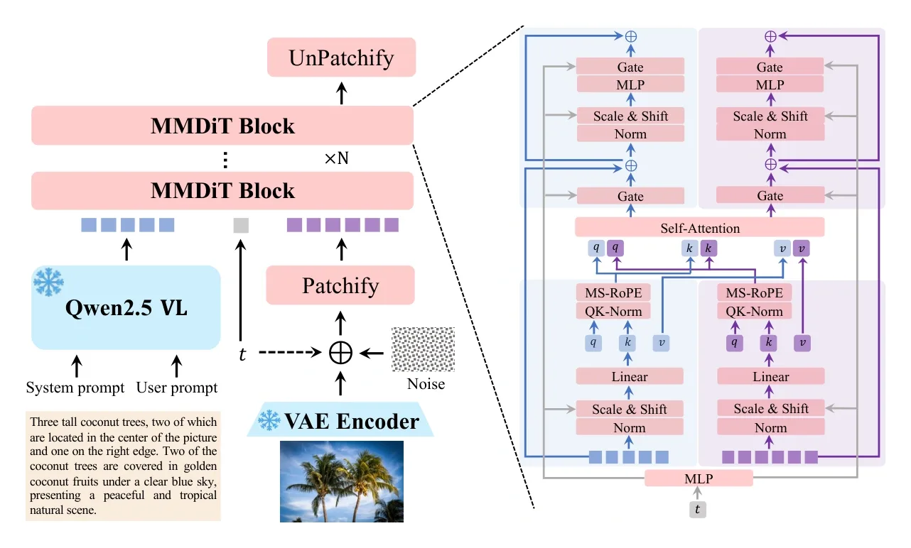
报告采用双流 MMDiT，分别处理条件与图像特征，再进行跨模态交互。它并不是照搬原始 DiT 的“类别向量加时间向量”接口，也不能因为同属多模态 Transformer，就说它与 FLUX.1 的双流、单流配置完全相同。
报告列出的生成主干约 20B 参数、60 层，图像 VAE 使用 16 通道与八倍空间下采样。参数规模与通道数只是系统设计的一部分，并不单独解释文字渲染或指令遵循能力。
MSRoPE 与图文位置
图像位置天然是二维网格，文本位置通常是一维序列。把它们放进联合注意力，就要说明“这个 token 在哪里”，同时避免不恰当的位置安排干扰两种模态的区分。
RoPE（Rotary Position Embedding，旋转位置编码）通过位置相关旋转作用于查询与键。简写为
那么分数中的位置作用为
在标准旋转构造下，旋转组合与相对位置相关。多维 RoPE 再为不同坐标安排特征子空间，保留二维位置关系。
Qwen-Image 的 Multimodal Scalable RoPE（MSRoPE，多模态可扩展旋转位置编码）将图像坐标以中心组织，并把文本的两个位置坐标取成相同序列索引，可示意为
这是位置安排的示意，不是完整实现中的所有缩放细节。文本因此沿坐标“对角线”延伸，避免必须把整个文本序列指定到某一条图像行上，同时保留文本顺序与图像分辨率扩展的接口。#Qwen-2025-Image（MMDiT）
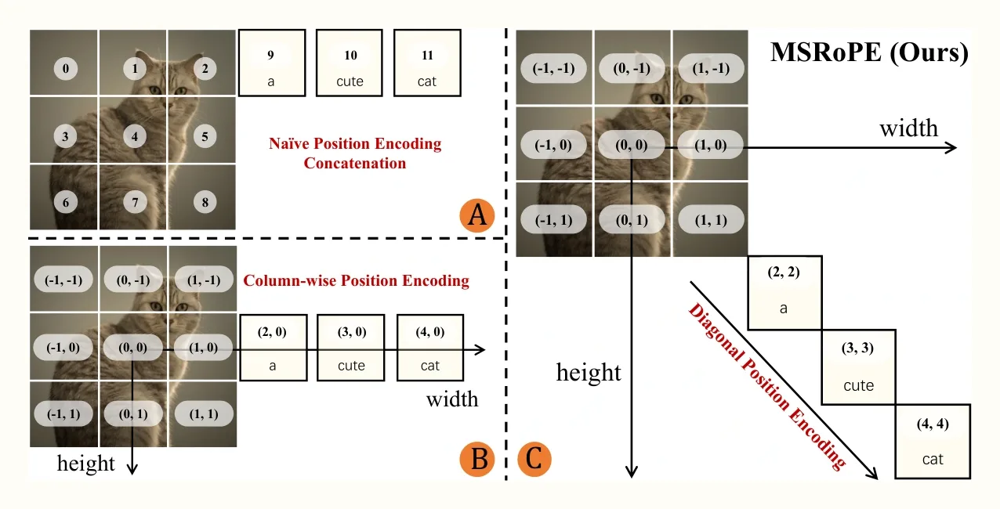
位置编码帮助模型使用空间与序列关系，但不能单独保证物体位置正确或文字拼写准确；它必须与训练数据、条件表征和生成监督共同工作。
VAE 与文字数据
假如图像编码阶段已经抹掉了小字的笔画，后面的主干即使能理解“这里应该写什么”，也很难通过该表示接口稳定恢复这些细节。
Qwen-Image 采用 Wan-2.1-VAE 架构，使用图像与视频兼容的共享编码器，以及分别面向图像、视频的解码器设计。报告冻结编码器，专门微调图像解码器，训练材料包括文档、幻灯片、海报和合成文字图像；图像解码器训练使用重建与感知损失。#Qwen-2025-Image（VAE）
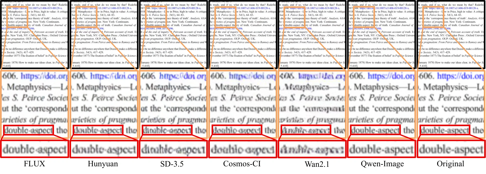
表示接口之外，还要让图文监督准确说明内容。报告的数据流程包含文字识别与转写、语言与字符分布平衡，以及通过可控渲染合成文字训练样本。这里的合成文字数据不应一概理解为另一个生成模型画出的图片。
因此，“更强的语言编码器 → 自动会写正确汉字”不是充分解释。模型需要同时知道应该写什么、怎样布局，以及怎样通过像素重建出正确笔画；这些分别涉及条件、主干、数据与解码器。
训练与采样
Qwen-Image 报告使用线性路径的 Flow Matching。沿本篇数据端为 0、噪声端为 1 的统一约定，可以写成
报告原式采用相反时间方向，这里通过 $t=1-\tau$ 转换。网络学习给定当前状态与条件的平均速度场；配对路径是直线，也不保证学到的生成轨迹处处为直线。
生成时再沿噪声到数据的方向求解。例如 Euler 更新为
这一式子同样帮助读懂 FLUX 官方推理代码中“状态加时间差乘预测”的操作，但它只是基本更新形式；具体模型的时间变换、引导与高阶求解配置仍需单独处理。
Qwen-Image 的 Producer–Consumer 框架则是训练系统工程：Producer 负责过滤、编码与准备数据，Consumer 消费准备好的表示、专注训练主干。它提高流水线吞吐，不是另一种生成概率路径，也不是推理时要串联的两个生成器。
Qwen-Image-2.1
单流主干与 RGBA 表示
初代 Qwen-Image 的机制不能直接套在新版上。2.1 官方资料描述的是 7B 视觉生成组件、32 层单流 DiT，而不是前面初代报告的 20B、60 层双流主干。7B 只计视觉生成部分，不是包含文本编码器后的全系统参数量。#Qwen-Image-2-1
新版使用 Qwen3-VL 8B 编码文字与条件图，图像编解码器改为 64 通道 RGBA VAE、空间压缩倍率为 16。RGBA 在红、绿、蓝之外增加透明度通道，因此生成对象可以是透明背景的素材，也可以是待编辑的透明图层；透明度不再只能由外部抠图工具补上。
条件前缀与缓存复用
它的另一处重要变化在于 哪些 token 可以读取哪些信息。官方称其为 block-causal attention：文字遵循 token 级因果约束，同一图像块内允许双向交互。它把不同粒度的注意力约束组织到一个单流主干中，同时支持条件前缀的键值缓存（KV cache）。
为什么缓存有价值？在一次编辑请求中，指令与参考图通常固定，变化的是每一步的带噪目标图。如果某层条件表示必须读取目标图状态，那么目标一变，条件的键和值也会改变，就不能直接复用旧缓存。对条件前缀施加适当的注意力约束，使其不依赖后续变化的目标状态，才有可能在后续去噪步继续使用同一份计算结果。
把条件记为 $C$，当前生成状态记为 $z_\tau$，可以将这一思路概括为
这里是解释缓存依赖关系的接口示意，不是另一个训练损失；实际模型会逐层保存相应的键和值。缓存省去的是固定条件的重复计算，不是取消目标图的逐步生成。 如果修改了指令或参考图，相应缓存也需要重新计算。
编辑能力与公开资料
官方还列出最多 10 张参考图、圈选/涂画/独立掩码的局部编辑，以及 Flow Matching、Euler 离散调度与动态时间变换。它们分别涉及任务接口和采样配置，不能统称为“换成单流”带来的结果。本节依据官方文字架构说明；官方已公开文字架构说明，前面的初代结构图不代表新版。
Z-Image
设计目标与原始架构
Z-Image 的核心问题是：在较紧凑的生成主干里，怎样同时处理文字、图像状态与编辑参考信息？论文给出的 S3-DiT，即 Scalable Single-Stream Diffusion Transformer，使用约 6.15B 参数、30 层主干，重点是跨模态共享计算。#Z-Image-report
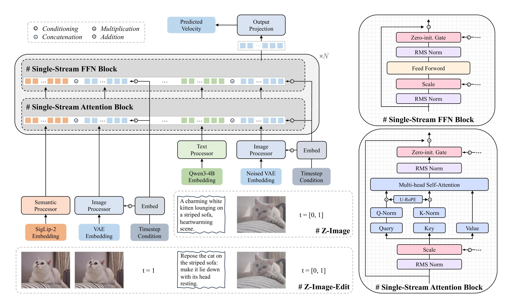
模态对齐与共享计算
读图时，可以沿三条通路进入主干：
- 文字由 Qwen3-4B 编码，提供指令语义。
- 图像由 FLUX VAE 编码，提供生成或重建所需的连续潜变量。
- 编辑任务额外使用 SigLIP 2 提取参考图语义；这不是每次文生图都要运行的第三条条件通路。
不同模态不是直接把原始张量混在一起：它们先经过各自的轻量处理器，每个包含两个 Transformer block，完成初步对齐，再把 token 拼成统一序列，共享后续 attention 与 FFN。attention 负责读取其他 token，FFN 负责逐 token 变换特征；二者都共享，才是这里单流设计的重要含义。
其设计取舍是：保留少量模态专属处理，让大部分主干参数服务于共同的序列建模。共享结构为提高参数利用率提供了途径，但不能仅凭“单流”就断言它在所有任务都优于双流；质量还依赖数据、训练和参数规模。
论文采用 3D Unified RoPE 区分文字、图像空间和多图关系。编辑中，参考图与目标图使用对齐的空间位置，并在另一坐标维度上分开；还使用不同时间条件区分干净参考与带噪目标。这使模型既能利用空间对应，又不会把参考图当成同一张正在去噪的图像。
Flow Matching 与少步蒸馏
Z-Image 的训练仍是前面介绍的线性路径 Flow Matching。沿用本文数据端 $\tau=0$、噪声端 $\tau=1$ 的记号：
原论文使用相反的时间方向，这里已作转换。因此，它的结构创新并不是发明了一种新的速度标签，而是组织输入、共享主干，并结合数据、训练与后训练获得效率。
还要区分 Z-Image 基础模型与 Z-Image-Turbo。论文中的 Turbo 通过少步蒸馏等后训练，在报告设置下使用 8 次函数评估（NFE）。少步能力来自相应训练，不是单流架构天然只需八步；延迟与显存也要连同分辨率、精度和硬件一起比较。
HunyuanImage 3.0
统一多模态架构
HunyuanImage 3.0 进一步改变了系统组织：不是只让一个外置文本编码器为图像生成器提供条件，而是在一个原生多模态模型中同时组织文字理解、文字生成与图像生成。报告采用混合离散—连续建模：文字 token 用自回归预测，图像潜变量用扩散式预测。#HunyuanImage3-report
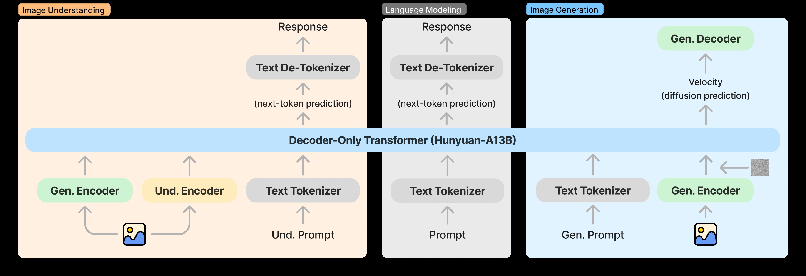
MoE 与双图像编码
主干基于 Hunyuan-A13B，使用混合专家网络（Mixture of Experts，MoE）：总参数超过 80B，每个 token 选择部分专家参与计算，报告给出的每 token 激活规模约为 13B。因此总参数、激活参数与实际运行开销是不同量，不能拿其中一个数字直接与稠密 DiT 的参数量判断快慢。
生成路径使用 32 通道、16 倍空间下采样的 VAE。条件图有两种互补表示：视觉编码器提供语义特征，VAE 提供连续图像表示，再通过不同投影模块送入主干。可以直观地理解为：一条路径帮助理解“图里是什么”，另一条保留生成所需的视觉表达；两条路径在同一上下文中共同发挥作用。
注意力与位置编码
统一序列带来一个问题：文字需要因果性，图像去噪又需要整张图内部的空间交互。如果所有位置都严格按文字顺序读取，图像块就难以充分协同；如果所有位置完全双向读取，文字训练又可能读到本应预测的未来内容。
报告用 Generalized Causal Attention（广义因果注意力）协调两者：文字读取此前上下文，图像 token 则可以读取此前上下文和同一图像段内的其他 token。多待生成图像的训练样本还需额外掩码，不能把这个规则无条件简化为整段双向 attention。
位置编码采用 Generalized 2D RoPE：图像拥有二维位置，文字仍能保留与原有一维位置编码的兼容关系。模型还学习分辨率与宽高比的特殊 token，使图像形状也能根据上下文确定。
这里的核心进展是 离散文字与连续图像生成的协同接口。它没有把图像改成逐像素的语言模型采样，也没有让扩散步骤消失；文字自回归和图像扩散各自处理适合的对象，再由序列、注意力和位置编码衔接。
Seedream 5.0 Pro
生成与交互式编辑
Seedream 5.0 Pro 官方强调高密度信息图、空间标注与草图引导的交互式编辑、摄影质感，以及多语言文字生成；编辑中还包括图层分离。它们指向一个任务变化：用户希望模型组织复杂信息、读取局部意图，并产出便于继续编辑的内容。#Seedream5-official
架构与证据边界
图层分离不能直接证明内部使用了分层潜变量，空间标注编辑也不能证明一定采用 ControlNet。5.0 Pro 官方产品页未披露足以说明这些机制的结构与训练细节，也未定位到对应原始架构图；不能据能力描述替它指定主干、预测目标或采样器。
FLUX.2
多参考图与版本定位
FLUX.2 官方页面列出多参考图生成与编辑、最高 4MP 输出，以及文字排版和空间控制等能力；不同版本面向质量、速度、控制或开放权重等定位。模型需要协调参考图各自提供的主体、外观或布局信息，以及文字要求。#FLUX2-official
架构与证据边界
公开实现已能进一步确认 FLUX.2 [dev] 的结构。官方模型卡将它描述为 32B Rectified Flow Transformer，并说明使用 guidance distillation；官方代码的默认配置为 8 个双流模块、48 个单流模块，隐藏维度 6144、48 个注意力头。这与 FLUX.1-dev 的 19 个双流加 38 个单流、隐藏维度 3072 的配置不同。#FLUX2-dev-code
代码还给出输入特征维度 128、文本条件维度 15360。这里的输入特征维度是主干接口，不能直接当成未经打包的 VAE 通道数；同样，文本条件维度也不是文本编码器的参数量。
因此可以明确：FLUX.2 [dev] 仍保留双流后接单流的组织方式，但配置与任务范围已有变化。guidance distillation 是将引导行为纳入相应训练的安排，不等于推理时必须计算两次网络输出。以上结论限定于公开的 [dev] 配置，不外推至所有产品版本。官方产品页、仓库与模型卡中尚未定位到新版原始架构图，不以效果图替代。
统一比较
FLUX.1 与初代 Qwen-Image
| 维度 | FLUX.1-dev 公开实现 | Qwen-Image 技术报告 |
|---|---|---|
| 图像表示 | 16 通道图像 latent | 16 通道、图像视频兼容 VAE 表示 |
| 条件表示 | T5 序列与 CLIP 全局文本向量 | 冻结 Qwen2.5-VL 隐藏状态 |
| 主干组织 | 双流后接单流 Transformer | 双流 MMDiT |
| 模态交互 | 联合注意力与调制 | 联合注意力与 MSRoPE |
| 生成过程 | 潜空间速度场的数值采样 | 线性路径 Flow Matching |
| 本章关注 | 公开架构与推理接口 | 架构、文字渲染与训练系统 |
两者都说明：现代图像基模的能力来自多个接口协同，而不是只换一个预测符号。更强的条件编码、多模态交互、表示重建和数据设计，共同影响模型能否理解要求、组织画面并呈现细节。
现代基模的系统接口
| 模型与来源版本 | 表示与主干 | 条件与任务组织 | 本章可解释的重点 |
|---|---|---|---|
| Stable Diffusion 3（SD3） | 潜空间；MMDiT | 文字与图像分别参数化，通过联合注意力交互 | Rectified Flow 与多模态主干；原始架构图见本节 #Esser-2024-SD3 |
| FLUX.1-dev | 16 通道 VAE；双流后接单流 | T5、CLIP 与时间/引导调制 | 多种条件与生成主干的接口 |
| 初代 Qwen-Image 报告 | 16 通道 VAE；20B 双流 MMDiT | Qwen2.5-VL；文字与图像联合交互 | 文字渲染、MSRoPE 与训练系统 |
| Qwen-Image-2.1 官方说明 | 64 通道 RGBA VAE；7B 视觉生成、32 层单流 | Qwen3-VL、条件前缀缓存、多参考编辑 | 透明图像表示与固定条件计算复用 |
| Z-Image 论文 | FLUX VAE；约 6.15B 单流 S3-DiT | Qwen3-4B；编辑额外用 SigLIP 2 | 模态对齐后共享主干；Turbo 另经蒸馏 |
| HunyuanImage 3.0 报告 | 32 通道 VAE；MoE 多模态主干 | 语义/VAE 双图像编码；文字自回归、图像扩散 | 离散与连续生成的统一组织 |
| Seedream 5.0 Pro 产品页 | 所引官方来源未披露 | 空间标注、草图、图层、多语言 | 已披露任务能力；架构待核验 |
| FLUX.2 [dev] 官方实现 | 32B；8 个双流与 48 个单流模块 | 文生图、单参考与多参考编辑；guidance distillation | 配置与任务扩展；其他产品版本分别核验 |
这些模型没有按同一顺序替换同一组件。可以在相近的 Flow Matching 目标下改变主干组织，也可以保持潜空间生成、升级条件理解；还可以把文字自回归与图像扩散放在同一系统中。路径、预测目标、表示空间、主干和任务接口，是相互配合但可以分别设计的维度。
本表也不是性能排名。总参数和激活参数不能直接比较，不同分辨率、采样次数和硬件的速度也不能混用；原始架构图帮助解释信息如何流动，性能结论仍需相应实验和消融支撑。
但“能按文字生成图像”和“能保留参考图内容并编辑”仍是不同任务。下一章将专门讨论 Kontext、Qwen-Image 的编辑路线与 ACE，解释参考图怎样进入上下文，以及训练目标怎样要求模型同时保留与修改。
编辑需要学习图像之间的关系
文字生成图像学习的是 $p_\theta(x\mid c)$。如果给模型一张男人的照片，再要求“给他戴一顶帽子”，任务还要求保留同一个人、姿态与背景等信息。
可以把任务写成
其中 $x_{\mathrm{ref}}$ 是参考图，$c$ 是指令，$m$ 是可选掩码。参考图也可以有多张。没有参考图时退回文生图；有参考图时，则需要理解输入与输出之间的关系。
“保留什么、修改什么”通常不是文字条件单独决定的。参考图接口、图像间的位置标识、任务样本和训练监督，都在影响模型的取舍。本章选择 Kontext、Qwen-Image 报告中的编辑路线，以及 ACE、ACE++，比较它们怎样组织这些信息；具体编辑算法的完整历史与实践另属图像编辑专题。
FLUX.1 Kontext
参考图与上下文
FLUX.1 Kontext 从 FLUX.1 文生图模型出发，将参考图经冻结图像编码器得到的潜变量，作为额外 token 接入视觉流。#BFL-2025-Kontext
设参考图编码为 $r=E(x_{\mathrm{ref}})$，目标图的带噪潜变量为 $z_\tau$，视觉序列是
参考图作为条件保持可见，生成过程迭代更新的是目标状态。它不要求先把参考图反演成能精确重建它的初始噪声，也不要求把两张图在通道上逐位置对齐。
序列拼接允许参考图和目标图具有不同的尺寸与长宽比；代价是序列变长，联合注意力的计算也随之增加。
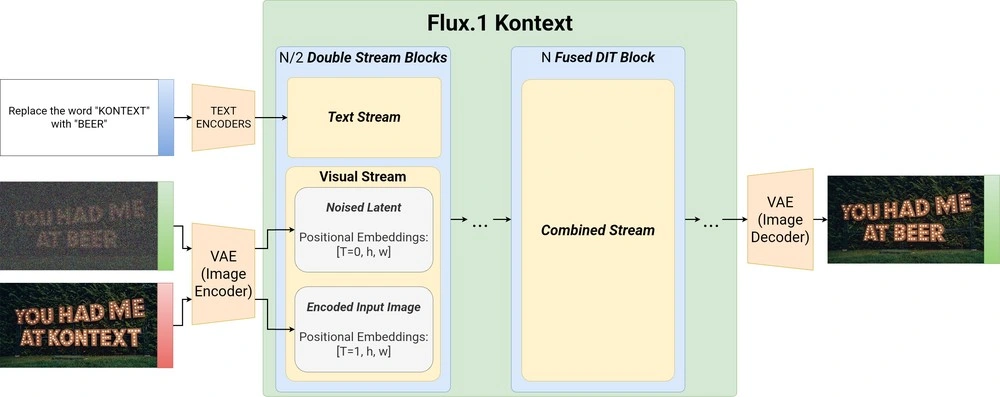
如何避免模型把两张图的同一位置混为一谈？Kontext 使用三维 RoPE 位置标识：
第一维用来区分目标与不同参考图，后两维保留各自内部的空间结构。这是虚拟图像索引，不是去噪时间 $\tau$；不能因为同样用了“时间”一词，就把它理解成视频里的真实帧时间。
关系学习与生成目标
训练提供参考、指令与目标的关系样本 $(x_{\mathrm{ref}},c,x_{\mathrm{out}})$。只对目标编码建立生成路径：
沿本篇数据端为 0 的约定，速度损失为
这里省略具体编码尺度与 token 化约定，用于展示监督关系。要求戴帽子时，标签是正确修改后的目标图像对应的路径方向；如果目标只是参考图本身，模型反而会被鼓励照抄。
因此，上下文结构负责让信息可访问，关系数据负责让模型学会怎样使用它。模型可以把前一次输出用作下一轮参考，但多轮编辑并不保证没有误差累积，主体漂移仍是实际边界。
还要区分版本：论文对 pro 描述了联合生成/编辑训练与后续蒸馏，对 dev 描述了指引蒸馏，并说明其编辑优化阶段专注图像到图像任务。不能把理论上支持空参考的统一框架，直接当成每个发布版本都进行了相同任务训练。#BFL-2025-Kontext（Implementation details）
Qwen-Image 编辑路线
语义与重建条件
Qwen-Image 报告的编辑扩展同时使用两种参考图表示：#Qwen-2025-Image（Multi-task training）
第一条通过 Qwen2.5-VL 理解图像与指令，形成语义条件；第二条保留 VAE 图像表示，为细节与结构提供直接参考。二者分别进入 MMDiT 的条件流与图像流，后者与带噪目标 token 按序列拼接。
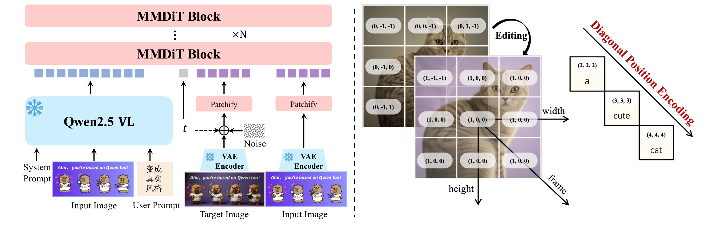
直觉上，只保留高层语义可能知道“是同一个男人”，却不足以准确保持衣纹与背景；只提供重建编码，又未必能充分理解复杂指令。双通路为这两种需求提供不同接口，但不意味着语义与细节已经严格、无重叠地分解。
报告还用附加的 frame 位置维区分不同图像。它与 Kontext 一样需要解决“这些 token 属于哪张图”，却不能因此认定两者的位置编码实现完全相同。
这里依据的是 Qwen-Image 技术报告中的编辑训练设计；后续命名为 Qwen-Image-Edit 的不同发布版本，其参考图数量、训练配置与能力应分别核对，不能把本报告细节一概套用。
ACE
条件单元与任务统一
有些任务只有文字，有些给一张参考图，有些给多张图与掩码，还有些需要理解上一轮结果。ACE 的切入点是：能否先统一输入组织方式，让同一个模型处理这些请求？#Han-2024-ACE
它提出 Conditional Unit（CU，条件单元），把文字指令与视觉条件放在一起：
图像和对应掩码在通道维拼接，再转成 token。没有参考图时视觉条件可为空；掩码的有效范围、空缺值与语义要遵循具体任务定义，不能仅凭“黑色或白色”猜其含义。
若需要历史，把多个单元组织为 Long-context Condition Unit（LCU，长上下文条件单元）：
它记录的不只是几张图，还包括哪些指令与哪些图属于同一个请求。
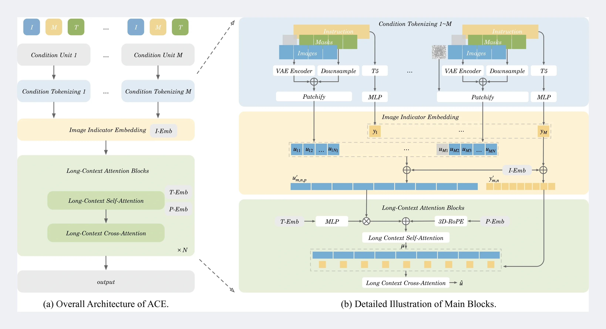
具体网络用 T5 编码指令、VAE 编码图像，并引入图像标识嵌入，把文字中的图像引用与相应视觉 token 关联起来。长上下文视觉 self-attention 允许不同条件单元交换信息；cross-attention 则按单元限制视觉 token 读取相应文字，减少跨轮指令混淆。
这些都是帮助模型找到信息的机制，不是显式符号执行器。LCU 形式上能装入历史，也不意味着模型能无限长、无损地记住全部编辑过程。
ACE++
输入格式与基座复用
ACE++ 延续统一任务输入，但更关注怎样有效利用已有文生图基座。对空间对齐编辑，若把条件图与目标噪声都变成额外序列，输入长度和原有注意力上下文会发生变化。#Mao-2025-ACEpp
它采用 LCU++，在一个视觉单元内部，把输入图像、掩码与当前带噪状态沿通道拼接。用已对齐的潜变量与掩码记号，可示意为
在同一网格上增加通道，不必为每项再增加一段序列；但输入投影仍需适配更多通道，不能说它完全没有结构改动。多个参考单元之间，再沿序列维组合：
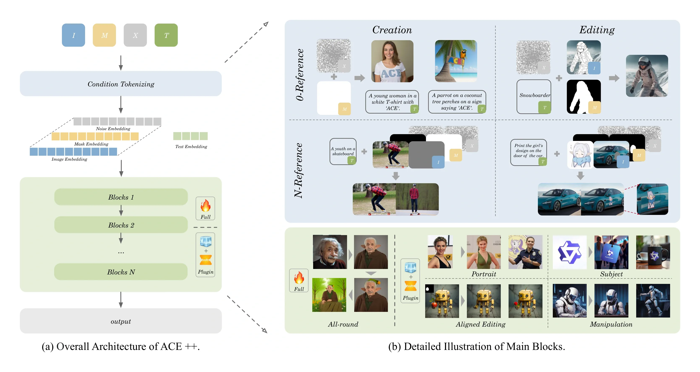
这与 Kontext 的序列拼接没有简单的优劣关系：前者对单元内空间对齐信息作通道组织，后者让独立参考图保留各自网格并作为额外序列。不同目标、基座与训练条件下的实验结论，不能直接互相替代。
ACE++ 基于 FLUX.1-dev 组织训练，并采用两阶段安排：先训练 0-ref 任务，让模型适应条件输入；再混合 0-ref 与多参考任务，扩展到更通用的指令。#Mao-2025-ACEpp（Two-Stage Training Scheme）
这里 0-ref 指没有额外参考样本，不等于完全没有待编辑图像或掩码。例如给一张待编辑图、指定局部修改，也可以属于该输入分类；不能把 0-ref 直接翻译成只有文字的文生图。
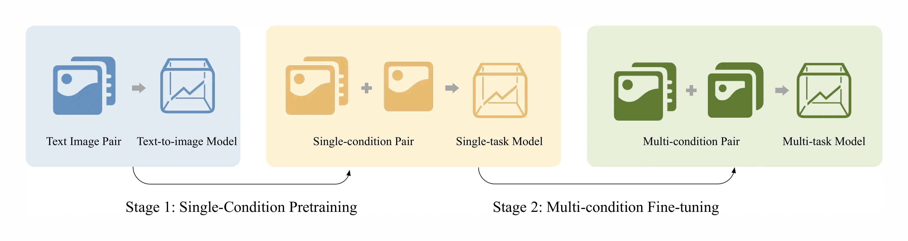
对多单元上下文，论文还把生成目标拆为参考样本的重建监督与目标样本的生成监督，可概括为
两者在其 Flow Matching 配置中使用速度回归；0-ref 情形没有额外参考重建项。参考重建是训练任务的一部分，不意味着用户推理时必须先重新生成全部参考图才能编辑目标。
条件、指令和保留约束如何协作
| 系统 | 参考信息怎样进入 | 主要组织思路 | 需要留意的边界 |
|---|---|---|---|
| Kontext | VAE 参考 token 接入视觉序列 | 图像上下文与关系学习 | 版本训练不同，多轮仍可能漂移 |
| Qwen-Image 报告编辑路线 | 语义编码与 VAE 编码双通路 | 指令理解与视觉保真协同 | 后续编辑版本需单独核对 |
| ACE | CU、图像标识与 LCU | 多任务、多图、多轮统一输入 | 可用上下文不等于无限记忆 |
| ACE++ | 单元内通道拼接，单元间序列组合 | 复用文生图基座与两阶段适配 | 空间对齐、掩码语义与任务分类 |
这些机制没有自动提供“编辑区外像素绝对不变”的保证。参考图为模型提供保留依据，成对目标数据教它哪些变化是正确的；如果应用需要严格保留某些区域，还可能需要显式掩码约束或最终合成策略。
但显式合成也有边界：改帽子可能影响头发遮挡与阴影，移动物体会暴露原来不可见的背景。保留与修改并不总能沿一条完美边界分开，模型仍需生成合理的新内容。
因此，本章的共同结论是：编辑能力需要模型学习图像间的条件关系，统一基模则进一步把这些关系组织为可训练的输入与任务接口。 接下来最后一章回到全篇框架，比较表示、主干、路径、条件与任务各自解决了什么，以及它们还留下哪些问题。
用五个问题读懂一个基模
从 VAE、Stable Diffusion 到 DiT 和现代基模，变化的不只是网络规模。理解一个新模型，可以依次问五个问题：它在哪个空间生成，用什么网络预测，沿什么路径更新，读取什么条件，又通过哪些任务训练？
| 设计维度 | 回答什么问题 | 本文例子 | 不能替代什么 |
|---|---|---|---|
| 表示空间 | 生成状态是什么，怎样回到图像 | VAE latent、RAE 特征、JiT 像素 | 不独自决定训练目标与采样器 |
| 生成主干 | 怎样处理状态与时间 | U-Net、DiT、MMDiT、单流主干、MoE | 不独自决定加噪路径 |
| 路径与预测 | 学什么量，怎样从噪声生成 | 噪声/图像/速度预测，Flow Matching | 不自动提供文字与参考图能力 |
| 条件接口 | 指令与参考信息怎样进入 | cross-attention、联合注意力、参考 token、前缀缓存 | 不自动保证遵循与保真 |
| 训练任务 | 哪些输入输出关系受到监督 | 文生图、指令编辑、多参考、理解与生成 | 不等于推理时的一组按钮 |
例如，“换成 DiT”主要改变主干；“用 RAE”主要改变表示与相应训练配置；“加入参考图 token”改变条件接口，还需要任务数据教模型怎样使用它。把这些变化拆开，才能知道论文解决了哪一层问题。
从表示到最终图像
对潜空间生成，可以把共同接口写成
$E$ 是图像编码器，$F$ 整理文字、参考图与可选掩码，$G_\theta$ 是生成主干。不同论文的 $y_\theta$ 可以是噪声、干净状态或速度，也可能先经预条件变换；同形状的输出张量，不代表相同的预测语义。
采样器按所选路径和参数化解释预测，逐步更新状态，最后由解码器得到图像：
这里是统一接口，不是把所有模型都规定成同一条线性路径。RAE 的编码器和解码器具有不同训练来源；JiT 则直接处理像素，可在这个比较框架中把图像编解码视为恒等映射，但这不是说它实际运行了一个 VAE。多模态模型还可能在图像采样之外自回归生成文字，不能用这一条图像路径描述其全部执行过程。
表示学习与生成学习也要分开检查。对有损表示，先看
能否保留任务所需的信息，再看生成主干能否学好该表示的分布。文字笔画若在重建时已丢失，单纯增强生成主干并不能保证找回；反过来，重建精细也不意味着这个空间的分布容易生成。RAE 与 JiT 正是从不同方向提醒我们，表示质量、生成难度与计算成本需要一起考虑。#Zheng-2025-RAE #Li-He-2025-JiT #Qwen-2025-Image
计算省在了哪里
VAE 通过缩小空间网格减少主干处理的位置数，但付出有损重建与编解码成本。RAE 保留较丰富的表征，同时带来高维潜变量的建模问题。JiT 避开预训练图像压缩器，仍需控制像素 token 数、预测方式与主干计算；不能从“没有 VAE”推出“计算更少”。
对包含全局注意力的模块，若目标序列长度为 $N_z$，条件长度为 $N_C$，注意力矩阵规模与
相关。这只刻画注意力部分，不包含投影、FFN、稀疏专家路由及其他开销，但能解释为什么提高分辨率和增加参考图都会给系统施压。
一次生成的时间又大致可拆为
其中 $N_{\mathrm{eval}}$ 是主干函数评估次数；不同步、不同分辨率下每次开销并不一定相同。这个近似帮助区分几种优化：少步蒸馏主要减少评估次数，较小主干影响单次成本，条件缓存减少固定上下文的重复计算，图像表示改变 token 数和编解码负担。它们可以组合，不能互相当作同一种加速。#Qwen-Image-2-1 #Z-Image-report #FLUX2-dev-code
因此比较模型速度，至少要同时看分辨率、参考图数量、采样配置、精度与硬件。MoE 的总参数与每 token 激活参数，也不能直接代替实测时延或显存。
更强基模仍有哪些不足
第一，表示仍可能丢失细节。压缩倍率、通道数和训练数据共同影响细字、纹理与局部结构；更丰富的表示又可能提高生成和解码成本。不存在仅凭一个压缩率就能判断的最佳方案。
第二，理解条件不等于精确满足条件。更强的语言或视觉编码器能改善条件表征，但计数、文字拼写、空间关系及多参考冲突仍需主干和监督共同解决。输入十张参考图，也不等于模型一定能准确区分十张图各自应贡献什么。
第三，编辑保真仍不是硬约束。统一生成与编辑的基模可以学习保留主体和局部修改，但通常不保证非编辑区域像素完全不变；多轮编辑还可能积累身份、结构与风格漂移。严格保留要求可能需要额外掩码、采样约束或合成策略，同时处理遮挡、光照等合理连带变化。
第四，训练与推理成本没有消失。蒸馏、缓存和参数共享针对不同开销，各有适用条件；更少步不保证所有提示和任务下质量都保持不变。主干、训练目标、数据和后训练各自贡献多少，需要控制变量的消融实验。
第五，图像能力不能直接等同于视频能力。单张图片只要求一个画面合理，视频还要求身份、运动、遮挡与场景状态随时间一致。把更多帧拼成 token 会增加计算，也需要时间位置、训练数据和任务设计支持；单帧画质领先并不能独自证明视频能力领先。
最后，不同模型的公开程度不同。论文、代码、模型卡与产品演示支持的结论范围不同；没有披露的训练配方，不能仅凭相似输出推断。本篇据此保留了各家版本与原始来源的边界。
下一篇要解决什么
本文回答的是完整基模怎样组成：表示决定生成对象，主干处理当前状态，路径与目标定义学习和更新，条件接口与训练任务让模型理解并执行要求。
前一篇条件扩散已介绍 CFG、ControlNet、适配器、DreamBooth 与 LoRA；本篇把这些条件与适配机制放回完整基模，区分表示、主干、生成路径和任务接口。接下来转入视频生成任务与时空建模：从文生视频、图生视频等任务出发，讨论如何表示多帧、引入时间关系，并在身份、运动与场景变化之间保持一致，并沿 VDM、Make-A-Video、Imagen Video 与 Video LDM 的开创性工作，理解早期视频生成系统如何训练和采样。
参考来源
- Rombach, R. et al. High-Resolution Image Synthesis with Latent Diffusion Models。
- Kingma, D. P. 与 Welling, M. Auto-Encoding Variational Bayes。
- Ronneberger, O., Fischer, P. 与 Brox, T. U-Net: Convolutional Networks for Biomedical Image Segmentation。
- Ho, J., Jain, A. 与 Abbeel, P. Denoising Diffusion Probabilistic Models。
- CompVis. Stable Diffusion v1-4 模型卡。
- CompVis. Stable Diffusion v1 推理配置。
- Peebles, W. 与 Xie, S. Scalable Diffusion Models with Transformers。
- Zheng, B., Ma, N., Tong, S. 与 Xie, S. Diffusion Transformers with Representation Autoencoders。
- Li, T. 与 He, K. Back to Basics: Let Denoising Generative Models Denoise。
- Ma, N. et al. SiT: Exploring Flow and Diffusion-based Generative Models with Scalable Interpolant Transformers。
- Yu, S. et al. Representation Alignment for Generation: Training Diffusion Transformers Is Easier Than You Think。
- Wang, S., Tian, Z., Huang, W. 与 Wang, L. DDT: Decoupled Diffusion Transformer。
- Black Forest Labs. FLUX 官方仓库。
- Qwen Team. Qwen-Image Technical Report。
- Black Forest Labs et al. FLUX.1 Kontext: Flow Matching for In-Context Image Generation and Editing in Latent Space。
- Han, Z. et al. ACE: All-round Creator and Editor Following Instructions via Diffusion Transformer。
- Mao, C. et al. ACE++: Instruction-Based Image Creation and Editing via Context-Aware Content Filling。
- Qwen Team. Qwen-Image-2.1 官方模型卡；官方仓库与架构说明。
- Z-Image Team. Z-Image: An Efficient Image Generation Foundation Model with Single-Stream Diffusion Transformer。
- Hunyuan Team. HunyuanImage 3.0 Technical Report。
- ByteDance Seed. Seedream 5.0 Pro 官方介绍。
- Black Forest Labs. FLUX.2 官方介绍。
- Esser, P. et al. Scaling Rectified Flow Transformers for High-Resolution Image Synthesis。
- Black Forest Labs. FLUX.2 官方仓库；FLUX.2 [dev] 模型卡与公开配置。